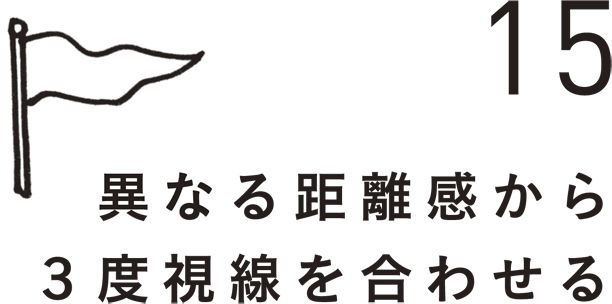
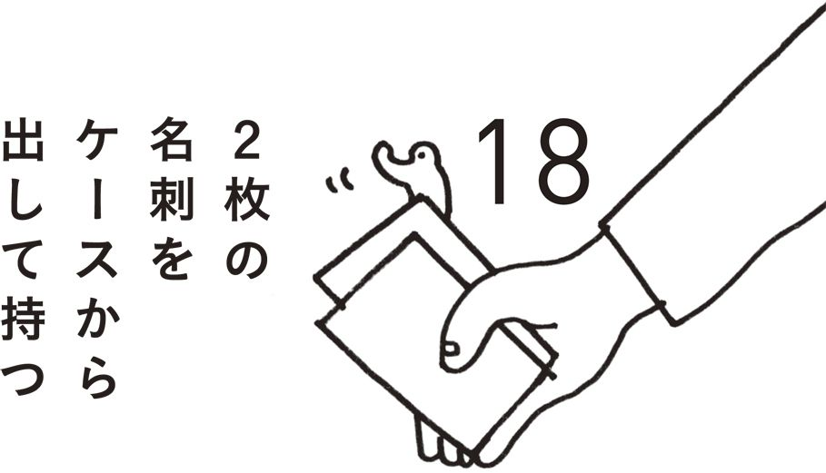
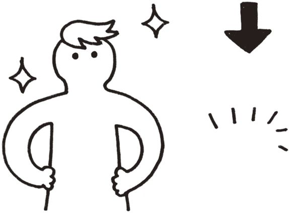
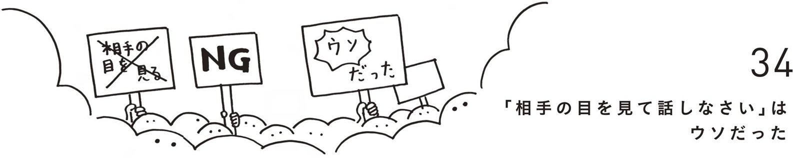
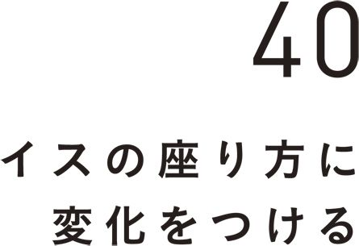
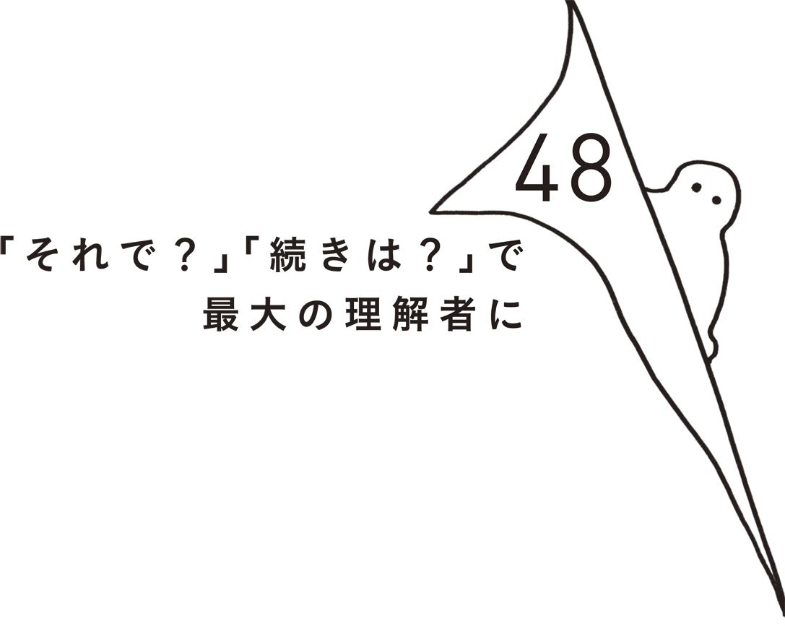
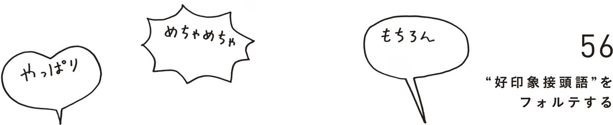
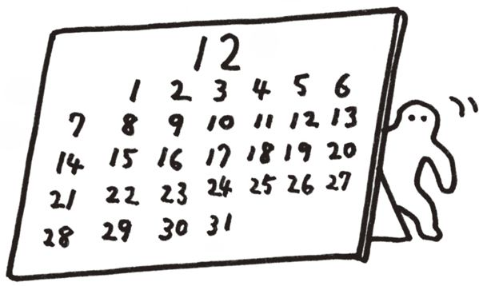

| 話しかけなくていい！会話術 | |
| 木村 隆志 | |
| (2016) | |
Prologue
漫画、小説、一般書籍 RAW ZIP RAR 無料ダウンロード http://13DL.NET
会話が盛り上がらないのはなぜ？
「会話が盛り上がってないな......」
最近はどこへ行ってもこう感じる機会が増えました。
会社の休憩室やエレベーター、取引先との親睦会、とあるパーティーやイベント、合コン。どこもあまり会話が盛り上がっていない気がします。
お互いに愛想笑いをしているだけでそれほど言葉を発さず、どちらかが声をかけるけど、当たりさわりのない話ばかりで続かない。ひどい人は、ロクに目すら合わせず、逃げるようにスマホを取り出して液晶画面を見てしまう。もちろん、この人たちは、それ以上に打ち解けて仲よくなることはないでしょう。
つまり、ほとんど話していないのに、「この人とは仲よくなれないかな」とみなしてしまい、距離が縮まることはないのです。その先の会話に共通点や共感できることがあって、意気投合できるかもしれないのに。
ただ、ネットやアプリなどの発達で液晶画面を介した会話が増え、対面会話の機会が減っているだけに、そうなってしまうのも仕方ないのかもしれません。
あなたは以下の７つに心当たりはないでしょうか？
・公私ともに、対面で会話する機会が減っている
・自分から声をかけるのが苦手で、仕事にも多少の支障がある
・ネットツールでは気軽に話せるのに、面と向かうと第一声が出ない
・会話の相手は同じ人が多く、基本的に好きな人とばかり話している
・気まずい雰囲気のまま、会話が終わるときがある
・会話上手な人を見ると「うらやましい」と思ってしまう
・翌日以降、何を話していたのか、思い出せないときがある
１つでもあてはまるものがある人は、ぜひこの本を読んでノウハウを実践してほしいと思います。そして、７つすべてあてはまる人も心配無用。決して深刻な状態ではなく、行動パターンを少し変えるだけで改善できるでしょう。
書店には、話し方や会話術の本がズラリ並び、コミュニケーションをテーマにした講演・セミナーも頻繁に行われていますが、これらはいずれも「積極的に話しかける」タイプのものばかり。デジタルコミュニケーションが主流となり、よりシャイになった現代人にはハードルが高いものなのです。
そこでこの本は、「『無言』か『ひと言』のみで会話を盛り上げ」て、「相手から好かれる」というコンセプトで書きました。会話はよいスタートが切れて、１度でも盛り上がることができれば、成功したも同然。決して積極的に話しかけたり、冗舌に話し続けたりする必要はないのです。
「話しかける」より「話しかけられた」ほうがうれしい
日ごろ私はコミュニケーションに関わるさまざまな相談を受けていますが、ここ数年間、会話に関する執筆や相談依頼が増えています。しかもその大半が、「何を話したらいいかわからない」という〝自分から話しかけられない人〟をターゲットにしたものでした。
自分から話しかけられない人たちは、口をそろえるように「うまく話す自信がない」「嫌な顔をされたくない」と言いますが、それも仕方がありません。
そもそもほとんどの人は、「自分から話しかけるより、相手から話しかけられたい」「そのほうが気楽だし、うれしい」と思っているからです。
また、最近は「見たいものを見たいときに見られる」「ほしいものをほしいときに買える」など簡単な手続きや安価で、希望がかないやすい時代になりました。そのため人間関係においても、「どうしても手に入れたいもの」＝「わざわざ話しかけてまで仲よくしたい人」と思えなければ話しかけられるのを待つだけ、という受け身のスタンスを取る人が多数派になっています。
しかしそれは見方を変えれば、「お互いに〝話しかけやすい状況〟を作れていない」というだけ。その状況さえ整えば、どちらからともなく話しかけられるし、笑顔のまま会話が進んでいくものです。もちろん、ただ待っているだけではダメなのですが、無理に頑張って話しかける必要はありません。
この本に書かれているのは、どれも簡単で「誰でも」「今すぐ使える」シンプルな方法ばかり。もしあなたが「周りの人から話しかけられたい」と思っているのなら、迷わずこの本の方法を使ってみてください。
話が上手くなるほど嫌われる
数えきれないほどの会話本がある中で、こちらを手に取ったあなたは賢い人。
その理由は、「どんなに話が上手くなっても、人から好かれることにはつながらない」からです。
話の上手い人とコミュニケーションの上手い人は、似ているように見えて、実はまったくの別物。話の上手い人は〝伝達能力の高い人〟である一方、コミュニケーションの上手い人は〝人から好かれる人〟であり、大きく異なるのです。
たとえば、あなたは話の上手い人を好きでしょうか？ それとも「話は上手いけど、どこか好きになれないな」と思ったことはないでしょうか？ あるいは、話の上手い後輩をかわいがっていますか？ 話の上手い上司に気を許せますか？
実際のところ、話が上手くなればなるほど、「思っていたほど好かれない」どころか、「何かいけ好かない人」と思われるなど、好感度は下がっていくのです。
そんな話の上手い人よりも好かれるのは、感じのいい人。決して話の上手さでも、ましてや口数の多さでもなく、「思わず話しかけたくなる」「あなたとは気持ちよく話せる」という人なのです
特にネットでのコミュニケーションが増えた今、最も必要とされているのは、〝うまく話すための会話スキル〟ではなく、〝円満な関係を築くためのコミュニケーションスキル〟。もともと会話は両者をつなぐコミュニケーションツールの１つですが、このスキルに格差があると心の距離は遠くなってしまうので、あまりテクニックを身につけすぎないほうがいいのです。だからこそこの本は、円満な関係を築くためのノウハウに絞って書きました。
どんなに話が上手くなっても、周りの人から好かれないのであれば意味がありません。だからこそ、みなさんには、話の上手い人ではなく、コミュニケーションの上手い人になってほしいと思っています。
「口ベタの人こそチャンス」の時代
コミュニケーションの上手い人になるためには、必ずしもあなたが話す必要はありません。前項で書いたように、むしろ話すほど嫌われるリスクが高くなるので、あまり話さないくらいのほうがいいのです。
ゆえに、もし今あなたが自分自身を「口ベタ」と思っていたとしても問題ありません。この本に書かれた88のノウハウは、いずれも「無言」か「ひと言」のみのシンプルなものばかり。「自分にできるかな」と不安を感じることも、「覚えなきゃ」と力む必要もなく、ただ実践するだけで、周りの人から〝好かれて話しかけられる人〟になれるのです。
周りの人から好かれて話しかけてもらえるようになれば、当然会話の機会は増え、公私を問わず笑顔やチャンスの数が増えるでしょう。
「人に好かれようとする」と書くと、「あざとい」と感じる人もいるかもしれませんが、そんなことはありません。人間の脳には、「自分のことを好きになってくれる人を好きになる」という〝好意の返報性〟があるため、「相思相愛のムードで話しやすくなる」極めて理にかなった方法なのです。
既存の会話本は、「会話上手と思われたい」「言葉で相手をコントロールしたい」という自己顕示欲をベースにしたものばかり。「みなさんそんな人になりたいのかな？」「そんな人とは仲よくなりたくないのでは？」、長年そんな違和感を覚えていた私はようやくこの本を書くことができました。
大事なことなので、もう１度言わせてください。
「会話なんて上手くなくてもいいんだよ」
「上手くなりすぎると、むしろ好かれないよ」
あなたの人生が、多くの人々に囲まれて、笑顔であふれたものになるように、少しでも役立てばいいなと願っています。
Contents 話しかけなくていい！会話術
何よりも先に挙げておきたいのは、〝話しかけられるのが上手な人〟の特徴。
人が思わず話しかけたくなるのは、スマイル（ｓｍｉｌｅ＝笑顔）、サイト（ｓｉｇｈｔ＝視線）、サイン（ｓｉｇｎ＝合図）、サルート（ｓａｌｕｔｅ＝会釈）、スキンシップ（ｓｋｉｎｓｈｉｐ＝接触）がある人。これらの〝５つのＳ〟がある人は威圧感がなく、親近感を与えられるため、必然的に話しかけられる機会が多いものです。
〝５つのＳ〟はいずれも、「声を発しない」ノンバーバル（非言語）コミュニケーションであり、会話に苦手意識がある人も問題なくできるもの。裏を返せば、「声を発しないところで、あなたの印象が上がったり、下がったりしている」ということなのです。
実際、「人の印象が形成されるのは、話の内容（言語情報）が７％、声の質やテンポ（聴覚情報）が38％、見た目（視覚情報）が55％」という心理学者メラビアンの実験結果もあるくらい、話すこと以上に目から入る印象は重要。もしあなたに〝５つのＳ〟の中で欠けているものがあるとしたら、それはスキルがないわけでも、できないのでもなく、「ただやっていない」だけなので、ぜひ実践してほしいと思います。
たとえば、人が赤ちゃんに声をかけたくなるのは、この〝５つのＳ〟を感じるから。赤ちゃんのニコニコ笑い、無垢な目でじっと見つめ、頭や手足をバタバタさせる仕草は合図や会釈に近く、手を出すとつかんでくれます。本来、人間同士のコミュニケーションはこれくらい無防備なほうが活発化しやすいもの。みなさんには、「こんな人を見ると、思わず声をかけたくなる」という人間心理を覚えておいてほしいと思います。
〝５つのＳ〟を上手に使える人は、どんな人にも好印象を与えられますが、特に効果が大きいのは恋愛面。「好き」という直接的な言葉よりも、笑顔を見せ、視線を送り、手を振るなどの合図を出し、丁寧な会釈や自然な接触ができるほうが、チャンスは広がります。
〝５つのＳ〟の具体的な使い方は以降のページで書いていきますが、みなさんが「いつ、どこでも、すぐに」使えるものばかりですので、安心して読んでもらえたらと思います。
目から入る印象は、話すこと以上に重要。あえて無防備な姿を見せる
笑顔は相手への好意と、敵意のなさを示すものであり、会話より先にはじまる第１のコミュニケーションとも言えます。また、もともと人は、「好意を示された人のことを好きになる（好意の返報性）」という傾向があるだけに、その意味でも笑顔は重要なのです。
だからこそ、それぞれの場面に合う笑顔を使い分けることが大事。たとえば、本当にうれしいときは満面の笑み、緊張感のある場では穏やかなほほ笑み、面識のない人には作り笑いなど、このように人は意図的に笑顔をコントロールできるので、みなさんも「この場面ではこの笑顔」とＴＰＯに応じて、使い分けてほしいのです。
ここでは、特に話しかけられやすい笑顔を紹介していきましょう。
基本となるのは、やや目を細めて目尻を下げ、口角を上げるほほ笑み。心の中でゆっくり「イ」や「エ」を言うつもりでほほ笑んでみてください。これをするだけで感じのいい笑顔になりますし、周囲の人は、「こちらに好意を持っているということかな」「少なくとも話しかけて嫌な顔はされないだろう」と感じて、声をかけやすくなるものです。
おすすめは、最低３秒間、できれば５秒間、ほほ笑むこと。１秒程度しかほほ笑まない人が多いのですが、それでは「フッ」と鼻で笑ったように見えてしまうことがあるので気をつけましょう。とにかく長い時間ほほ笑んでいるほうが、話しかけられやすいのです。
また、話しかけられたら、さらに目尻を下げてタレ目にし、口角を上げて少し歯が見えるくらいの笑顔を見せましょう。その後、会話がはじまったら、「ハハハ」「フフフ」と声を出したり、ノウハウ35で挙げる手足を使ったボディアクションを交えたりしながら笑うことで、あなたの印象はどんどんよくなっていきます。
逆に気をつけたいのは、「作り笑いをしている」と思われること。「目が笑っていない」「顔が引きつっている」と思われると、話しかけられにくくなるので気をつけましょう。周囲の人から「表情が硬い」「愛想がない」「怒ってる？」と言われたことのある人は、間違いなく話しかけづらい雰囲気を作っているので、ぜひこれらの笑顔を心がけてください。
ほほ笑んでいる時間が長いほど声をかけられる
人間の瞳孔は、興味のないものや嫌いなものを見ると小さくなり、興味のあるものや好きなものを見ると大きくなります。これは、「目の黒い部分が大きくなったり、小さくなったりしている」ということ。
あなたは、黒目の大きい異性に見つめられてドキッとしたことはないでしょうか。あるいは、夢中に何かへ打ち込んでいる（黒目が大きい状態の）人を見たときに魅力を感じたことはないでしょうか。そう感じるのは、相手の目がキラキラ輝いているように見えるからなのです。
つまり、「相手に興味を持って見つめるか、興味のあるものや好きなものを思い浮かべながら相手を見つめるほうが魅力的に見える」ということ。それが相手へのアピールになり、「声をかけたい」という気持ちにつながるのです。
逆に、相手をしっかり見ずに視線が定まらなかったり、眠そうな目で見たりすると、「あなたに興味がない」と言っているのと近い状態であり、自分の魅力を感じさせることはできません。もし恥ずかしさを感じたとしても、視線をそらすのではなく、チラチラとでもいいので視線を送るようにしたほうが、話しかけられる可能性は高まります。「相手の目を見られない」という人も、「どんな人なのかな」「楽しくお話ししたいな」と興味を持ちながら相手の鼻や口を見つめることで、同様の効果が期待できるので、ぜひ試してみてください。
たとえば、幼児が上目づかいで大人に甘えるときは、まさに瞳が輝いて黒目が大きい状態。人気アイドルやキャバクラ嬢も、メイクなども含め、意図的にファンへキラキラ輝いた目を見せることで、声をかけたくなる心境にさせています。
また、ドラマや映画のヒーローやヒロインは、瞳がキラキラ輝く〝生きた目〟にすることで魅力を感じさせ、敵役や悪役は瞳の輝きを消した〝死んだ目〟にすることで魅力を消すことがよくあります。だから見る人はヒーローやヒロインに感情移入できるのです。
最後に小技を１つ。ムーディーなバーなどの暗い場所では、必然的に瞳孔が大きくなるので、見つめるだけで声をかけられる可能性が上がります。その上で「この人、好きかも」と興味を持って相手を見つめることで、話しかけられる可能性をさらに高めましょう。
相手に興味を持つことで、意識的に瞳孔を開かせる
うつむき加減の人と、顔を上げている人。多くの人が「どちらと話したくなるか」は言うまでもないでしょう。顔を上げて、自分の顔をしっかり見せている人は、それだけで明るく元気な印象を与え、声をかけられやすくなるのです。「何だそんなことか」と思うかもしれませんが、私に言わせれば、これができている人はほとんどいません。
もしあなたが明るく元気なキャラでなくても問題なし。アゴを少し上げるだけで、自然に顔が上がり、相手に見せる形になるため、ある程度は明るく元気そうな印象を与えられるのです。また、顔を上げ続けることで、本当に明るく元気なキャラになれる人もいます。
ただし、あまりアゴを上げすぎると、「偉そうだな」と思われてマイナスの印象を与えてしまうため、ある程度の加減が必要です。
目安にしてほしいのは、指１本分の感覚。その方法は、ふつうに前を見てから、手の甲を上向きにしてアゴの下に５本の指をあててください（中指の第２関節がアゴの先端にあたるイメージ）。次に、中指の背でアゴを一本分だけ押し上げると、少し顔が上がって視線も上向きになると思います。これが人と接するときの基本的な顔の向きなので、ぜひ覚えておいてください。
アゴをしっかり上げて顔を見せるお手本は、タレントやアスリートなどの人気者。たとえば、明るく元気なイメージの代表格であるベッキーさんは、常に指１、２本分くらいアゴを上げています。さらに、明るく元気でいられないときでも、アゴをしっかり上げて顔を見せているのも、彼らが人気者たるゆえん。
実際、ＨＫＴ48の指原莉乃さんは、恋愛スキャンダルに見舞われたとき、反省しつつも顔を下げませんでしたし、サッカーの三浦知良選手も日本代表から外されたとき、顔を上げて取材に応じていました。
これは裏を返せば、「顔を見せているから人気者であり続ける」ということであり、照明の光がよく当たり、カメラ映りもよくなるということ。アゴを上げることは、それくらい多くの意味で効果的なのです。
特に、身長が低い人、猫背の人は、意図的にアゴを上げることで顔が見えて話しかけられやすくなるので、試してみてください。
声をかけられる人気者は、例外なくアゴを上げている
どんな人でも会話の前に必ずしているのは、「相手を見る」という行為。視覚から得た情報がその人の印象となり、「話しかけるかどうか」を決めているのです。
相手から話しかけてもらうために重要なのは、相手に「この人は話しかけやすそうなキャラ」と思わせること。みなさんには、この本で紹介する表情や姿勢、服装や髪型などを工夫することで、話しかけやすそうなキャラの印象を身につけてほしいと思います。
なかでもポイントとなるのは、その人の印象を決める〝中心特性〟。これは心理学の用語なのですが、特にコミュニケーションの上で中心特性になりやすく、人の印象で影響が大きいのは、「温かい」「冷たい」の２つ。「この人は、温かそうなのか？ それとも冷たそうなのか？」、どちらの印象を与えるかによって「相手から話しかけられるかどうか」が大きく左右されてしまいます。
たとえば、あなたが「マジメで、頑張り屋で、仕事もできる」という好印象を与えていても、「でも、冷たそうなんだよね」と感じさせると、悪印象で覆い尽くされてしまい、ほとんど話しかけられることはありません。逆に、「適当で、飽きっぽくて、仕事もできない」という悪印象を与えていても、「でも、温かそうなんだよね」と感じさせたら、すべてを覆すほどの好印象になり、話しかけられやすくなります。
このように、人は目の前で見た１つの特性を、その人全体の印象として決めつけ、思い込んでしまうところがありますし、初対面の場合はなおのこと。自分の知らないところで、「この人は冷たい人だ」「話しかけにくそうな人だ」と決めつけられているケースがよくあるので要注意です。同時にあなた自身も、目の前にいる人を「冷たい人だ」「話しにくそうな人だ」と決めつけ、思い込んでしまいやすいので気をつけましょう。
「温かいか、冷たいか」以外で話しかけられるために重要な特性は、「明るいか、暗いか」「素直か、わがままか」「気がつくか、気がつかないか」などがあります。前者を感じさせるほど、話しかけられやすくなるので、心がけてみてはいかがでしょうか。
「温かく、明るく、素直、気がつく」特性を演出する
コミュニケーションの中で、現代人が最も苦手としているシーンは初対面。緊張のあまり、「目が合っても声をかけられない」という声もよく聞きます。しかし、問題は苦手意識でも緊張でもなく、プライドの高さ。「初対面の会話くらいスマートにこなしたい」「できないヤツと思われたくない」などのプライドが苦手意識や緊張を高めているのです。
しかし、話しかけられたいのなら、むしろ考え方は逆。「いかにプライドを捨てるか」がカギを握っています。基本的に人が「話しかけたい」と思うのは、〝自分と同等以下〟の人。スペックにしろ、心境や状況にしろ、「それほどでもない」と感じる人だからこそ、気軽に話しかけられるのです。一方で、自分と同等以上のものを持つ人との初対面は、「自分をよく見せよう」「なめられちゃいけない」と感じるため、気軽に話しかけられません。
〝自分と同等以下〟の人と感じさせる鉄板のキャラは、〝恥ずかしがり屋〟。カッコつけることなく、照れてぎこちない姿をそのまま出してしまうだけで、そう思わせることができるのです。しかも、恥ずかしがり屋キャラは、正直さや控えめさなどの好印象も与えられるので一石二鳥。さらに、「実際、話してみたら気さくで楽しい人だった」「思っていたよりできる人だった」という好ギャップを与えやすくなります。
つまり、「少しなめてもらうくらいのほうが話しかけられやすく、そのあとの会話で巻き返して一目置かれるチャンスも多い」など、いろいろな意味で好都合。間違っても、最も話しかけられにくい「プライドが高そう」と思われるキャラになることは避けましょう。
そもそも、ほとんどの人は初対面のときに恥ずかしさを感じていて、それを隠すために虚勢を張ろうとした結果、苦手意識や緊張を招いているのです。そのため、恥ずかしがり屋というキャラは、決して〝自分と同等以下〟ではなく、実際は〝イーブン〟の関係。それどころか、恥ずかしさを隠していない分だけアドバンテージがあると言ってもいいでしょう。
気をつけたいのは、恥ずかしがり屋と人見知りを混同しないこと。恥ずかしがり屋は人と仲よくなることに前向きであるのに対して、人見知りはマイペースで後向きなのです。
〝自分と同等以下の人〟と思わせてから、ギャップで株を上げる
ここまで書いてきたように、人は出会って数秒から数分で、目の前にいる人の印象を決めるところがあります。その意味で、表情や仕草だけでなく、ファッションや髪型も重要。選ぶアイテムやスタイルで、「話しかけられるかどうか」が決まります。
それだけに「自分が好きなものや似合うと思うものを選べばいい」というわけではありません。清潔感があることと、不快な気持ちを与えないのはもちろんのこと、みなさんにおすすめしたいのは、特定の印象を持たれない服装や髪型。特に「オシャレすぎる」、あるいは「個性的すぎる」デザインや柄は、自分との差を感じやすく、「話しかけにくい人」という印象を与えてしまうので避けたほうがいいでしょう。
デザインのシルエットはシャープなものより、ある程度のゆとりや丸みがあるものを選んだほうが、中心特性のところ（ノウハウ05）で書いた「温かい人」という印象を与えられます。イメージは、テレビの情報番組などで街頭インタビューをされている人。スタッフも人間である以上、話しかけやすい人を選んでいるのですが、その基準になっているのは「温かい人」であり、「いい意味でスキがある」ということなのです。実際に選ばれるのは、目立っている人よりも普通の人。シンプルでナチュラルな服や髪型の人ほど警戒心を抱かれにくく、話しかけられやすくなります。
シンプル＆ナチュラルかどうかのポイントは、どこか一部だけが目立たないこと。突出して目立つところがないほど、ファッションや髪型ではなく、人柄やキャラにフォーカスして見てもらいやすく、打ち解けるきっかけになりやすいのです。
たとえば、無地、ストライプ、ドット、チェックなどのシンプルな柄を着ている人は、ファッションの印象が「明るくさわやか」というものになりやすく、前髪の長さやカールなどにこだわるより、シンプルにおでこを出したほうが心を開いているように見えます。
もし「自分のこだわりや個性を出したい」としても、何度か会って距離が縮まってからにしましょう。それまではただの押しつけであり、単に話しかけられにくくなるだけなのです。
自分のこだわりや個性は、話しかけやすさの大敵
前項目でシンプル＆ナチュラルなファッションをすすめましたが、ここではさらに話しかけられるための服を紹介していきます。その最たるものが〝白〟の服。「何て普通のことを......」と思うことなかれ。白を基調にしたファッションの話しかけられやすさは、みなさんの想像以上であり、それを理解して使いこなしている人は少ないのです。
最も白の服を着こなしているのは、キャスター、アナウンサー、お天気お姉さん。朝から夜までどの時間帯を見ても、白い服を着ることで親しみやすい印象を与えていますし、さらに白特有のレフ板効果で顔に光が当たって生き生きとした表情を演出しています。
白の特徴は、さわやかさ、清潔感、無垢、正直。これらのいいイメージが着ている人に重なりやすく、「どんな色の人とも交われる」という印象もあります。さらに、「自分よりも番組や出演者に注目してもらおう」という謙虚さも感じさせて、好感度を上げているのです。
また、婚活イベントでも「男女ともに白い服を着ている人のほうがモテる」というのが定説ですし、医師や看護師が白衣を着ているのも、わかりやすい例の１つでしょう。いずれも白い服が周りの人との距離を縮め、コミュニケーションにつながっているのです。
それだけに、ビジネス・プライベートを問わず、シャツ、ジャケット、コートなどの上半身は、白系の服がベター。さらに、ノーネクタイや第１ボタンを外しておいたほうが、話しかけやすいカジュアルな雰囲気を醸し出せます。
季節という側面で見ても、「春夏はさわやかな白がピッタリの季節であり、秋冬は着ている人が少なく、いい意味で目にとまる」というように１年を通して話しかけられやすいものです。また、ビジネスのような黒や紺などの濃い色の服が多い場や、飲み会など夜のシーンでは白の効果が際立つので、意識してみてはいかがでしょうか。
私は白のボタンシャツと白い靴しか着用しなくなって15年が過ぎました。白を着用するもう１つのメリットは、自分自身を明るくさわやかな気分にしてくれること。年齢を重ねてオッサンになるにつれ、白の持つ力に助けられることが多いのです。
白いシャツで、親しみやすさと顔のツヤを演出する
白衣の看護師を見て「優しそうな人だな」、制服姿のＣＡを見て「気配りのできる人なのかな」と感じたから話しかけやすかった。あるいは、警察官が近づいてきて「ドキッ」としたけど、よく見たら警備員の服だとわかって「ホッ」とした。このように服装によってイメージが演出されることをユニフォーム効果と言います。
例に挙げたようなユニフォームのある専門職に就いていない人も、同じものをイメージさせる服を着ればＯＫ。たとえば、看護師の白衣を思わせる白いワンピース、ＣＡを思わせる清潔感ある服と首のスカーフを身につけるだけでも、話しかけられやすさが増します。
また、このようなユニフォーム効果が得られるのは、専門職のユニフォームだけではありません。ふだんの服装でも似たような効果が得られるのでぜひ試してみてください。
たとえば、さまざまなショップの男性店員は、ブランドのスーツとネクタイよりも、カジュアルなジャケットにノーネクタイ。女性店員は、ハイネックよりも胸元の見えるシャツ、長袖や長裾よりも手首や足首の見える七分丈のデザインのほうが、話しかけやすいオープンなイメージを演出できます。
さらに、公園などのジョギングコースではランナー用のウェア、スポーツバーにいるときはサッカー日本代表のユニフォームを着ているほうが話しかけられやすい、というようにシチュエーションにフィットした服を意識的に選ぶのも、王道の方法です。
メインとなる服以外では、アイキャッチ（目を引くもの）になるような小物を身につけるのも効果的。たとえば、いつも帽子やスカーフをしていれば、それがあなたのトレードマークとして認識され、「今日の帽子もいいですね」などと話しかけられやすくなります。
その他の小物には、男性なら眼鏡、ネクタイ、ポケットチーフ、ベルト、時計、カバン。女性なら髪飾り、ネックレス、イヤリング、指輪、ブレスレットなどがあり、服の色とのコントラストがあるか、差し色になるもののほうがアイキャッチになります。イベントやパーティーなど大人数が集まる場では、特に覚えてもらいやすいので積極的に活用してください。
ユニフォームで好印象を与え、小物で覚えてもらう
話しかけられる一歩前の段階は、ほどよい注目を集めることであり、「ちょっと気になる人だな」と思ったことがきっかけで距離が縮まったというケースはよくあります。
「ちょっと気になる」と思わせるテクニックとしておすすめは、〝外し〟のワンポイントを入れること。たとえば、スーツでキメているのに、眼鏡だけはカラフルなものだったり、キレイめのジャケットの下からミッキーマウスのＴシャツがチラリと見えたり、ビジネス系のコーディネートだけど袖はシースルーだったり、ボトムだけレザーやスウェットにするなど素材を変えたり、靴だけ赤や紫にするなど色を変えたり、冬に夏っぽいバッグを持つなど季節感を変えたりすると、それを見た人は「あれ？」と何だか気になるものです。
〝外し〟のポイントは、コーディネートの中に矛盾したワンポイントを入れて、微妙な違和感を抱かせること。もともと人間には矛盾したものを見たり、自分の考えと違うものを目にしたりすると、辻褄を合わせようとして考える傾向があります。そして、「あっ、ここが何か違うんだな」と理由がわかると、その人に興味を持って話しかけたくなるのです。
わかりやすい例を挙げるとしたら、サンドウィッチマンの伊達みきおさん。コワモテでダブルのスーツを着ていますが、ネクタイはかわいいプリント柄のものなどを選んでいます。あるいは、スーツで革靴なのに靴下を履かない石田純一さんも、外しのワンポイントを使っている１人と言えますし、芸能人にはたくさん出演者がいる中で「気になってもらう」ための工夫を施している人が多いので、ぜひ注目してみてください。
ただし、ノウハウ07で書いたように、〝外し〟をワンポイント以上に増やしすぎたり、主張の強いアイテムを選んだりすると、「個性的」「こだわりが強そう」などと話しかけにくいイメージを与えてしまうので、気をつけましょう。
この章で書いてきた「見た目だけで話しかけたくなる」最大のメリットは、相手に「どんな人なのだろう」と想像させられること。「面白そうな人だな」「もしかして魅力的な人かも」と想像させられたら、相手から歩み寄られ、話しかけられるので試してみてください。
１か所限定で〝外し〟を入れることで、気になる存在に
飲み会、パーティー、交流会など、４人以上の人が集まる場では、とにかく真ん中にポジショニングすることをおすすめします。真ん中は周囲が見渡しやすく視界良好。自分が「見える」ということは、同時に周囲から「見られる」ということでもあり、テーブル席であれば正面や両サイドから、大きな会場であれば３６０度から、話しかけられるチャンスが生まれます。また、「真ん中にいる」ということは、コミュニケーションに前向きであることの証。話しかけやすそうなオーラを醸し出すことができるのです。
もしあなたが自分のことを口ベタと思っているのであれば、なおのこと。テーブル席の四隅や、大きな会場の壁際にいるだけで、会話どころか視界にも入りにくく、もっと言えば、視界に入ったとしてもスルーされやすいので、センターに立ったほうがいいのです。
ＡＫＢ48などのアイドルをイメージしてみてください。テレビ番組などではＭＣの芸人や両サイドにいるメンバーが、センターの人に話しかけるような形でトークが進み、蚊帳の外にされることはまずありません。たとえば、指原莉乃さんや渡辺麻友さんになったつもりで真ん中に立ち、ニコニコ笑って待っていればＯＫ。それだけで自然に視線を集め、話しかけられるので、自分なりの言葉を返していけばいいのです。
逆に、最もやってはいけないのは、携帯電話に逃げ込むこと。話し相手がいないときは、どうしても携帯電話をさわってごまかしたくなってしまうものですが、下を向いて液晶画面を見た瞬間、話しかけられるチャンスは、ほぼ消滅してしまいます。どんなに寂しくても、近くにいる人たちの会話に入れなくても、逃げずに真ん中に立ち続けることが大事。下を向かず顔を上げているのはもちろん、楽しそうな笑顔を浮かべたり、軽くうなずきながら周囲の会話を聞いたりすることで、話しかけられるチャンスが生まれるのです。
「私はそこまで図々しくなれない......」という遠慮は無用。会話上手な人は真ん中ではなく、四隅や壁際などにポジショニングして、自分から声をかける人を選んでいるので、気にする必要はないのです。まずはあまり考えずセンターに立ってみてほしいと思います。
センターにいれば、「話しかけるべき人」とみなされる
大人数が集まるパーティーや交流会など、立ったままコミュニケーションを取る形のイベントは、自分から話しかけるのが難しい場の最たるところ。「話しかけていいのか」「嫌な顔をされないか」と不安なだけに、話しかけてもらうほうが圧倒的に気楽なものです。
そんなイベントなどで話しかけられるためのセオリーは、１人でいること。誰しも２、３人で参加している人よりも、１人でいる人のほうが「話しかけようかな」と思えるものです。
その理由は、いい意味で「さみしそう」に見えるから。話しかける側の心理としては、「１人でも来たということは、前向きにコミュニケーションを取ろうとしているのかな。でも、誰かと話さないとさみしいだろうし、こちらから声をかけたら喜んでもらえそう」などと思うのです。つまり、「いい意味でのスキがあり、相手に話しかける理由を与えている」ということ。特に自分も１人で参加している人は、親近感も重なって声をかけたくなる傾向があり、話が弾んで意気投合することも多いものです。
もし友人・知人と２人で参加したとしても、別々に行動し、ときどき２人でいる時間を作るくらいがベター。ずっと１人でいるのではなく、ときどき２人で打ち解けたムードを見せることで、「自分も彼らとあんな風に楽しく話したい」と思わせることができます。
また、一緒にいるのが、「楽しそう」「見た目がさわやか」「仕事ができそう」など魅力的な雰囲気の人なら、自分も「この人もきっとそうだろう」と似たような好評価を得られます。「魅力的な同伴者と比べられるから不利」「それでは引き立て役になってしまう」と思うかもしれませんが、その人はあなた自身の権威づけをしてくれる貴重な存在。たとえば、経営者グループに混じれば自分も経営者のように見えるし、明るい雰囲気のグループに混じれば自分も明るい人だと思われます。
一方で絶対に避けたいのは、３人以上の顔見知りで群れること。身内だけで固まり、内輪話で盛り上がっている姿を見ると、「あの人たちはいったい何しに来たんだ」と冷ややかな目で見られ、当然話しかけられることもないので注意しましょう。
イベントは〝１人立ち〟が基本。「さみしいのかな」と思わせる
イベントなどの会場が、ベンチのような長イスや、新幹線のような横並び席のときは、話しかけられるチャンス。偶然ながら、隣り合わせになることで一種の一体感が生まれ、話しかけるための心理的なハードルが下がります。
長イスや横並び席のメリットは、距離感が近く、目線の方向が同じこと。お互いの気配を感じ、動きもよく見えるだけに、話しかけられるきっかけやタイミングがつかみやすく、自然な形で会話がはじまりやすいのです。
横並び席に座るときのポイントは、「手前か、奥か」の場所と、「先か、後か」のタイミング。たとえば、２人用の長イスにあなたが先に座るとしたら、手前側に座ると、次の人が入りにくいため、「人を拒絶している」という印象を与えてしまいますし、マナー違反とも言えます。対して、奥側に座るのは、「人を受け入れている」という好印象。何も言っていないのに、「空けておきましたから、ぜひどうぞ」という意味になり、座りやすい雰囲気が居心地の良さにつながって、話しかけられるチャンスが広がっていきます。
一方、あなたが後から座るケースでは、奥側が空いている席を選びましょう。すでに座っている人の前を軽い会釈をしながら横切ることで、自分の存在を伝えられますし、「わざわざ自分の横を選んで座った」という事実がちょっとした特別感につながります。できれば、下を向いて何かを見ている人ではなく、顔を上げている人を選びましょう。
また、あなたが先に座るケースで気をつけたいのは、足を組んで座ること。横並びの席で足を組んで座るのは、「こちらに近づいてくるな」というサインのようなものなのです。
広い会場の後ろで奥側の席に座るのも、「話しかけられたくないからここに座っている」という無言のメッセージになってしまうので要注意。そもそも後ろの席は参加者の大半から見えづらく、自分の存在に気づいてもらえなければ当然、話しかけられる機会は訪れません。学校の授業と同じように、前向きな人が集まる前の席、そこそこ前向きな人が集まるのは真ん中の席であることが多いので、話しかけられたい人を狙い撃ちしてもいいでしょう。
距離が近く、気配を感じる横並び席は、出会いの宝箱
人と人の立ち位置によって、相手との心理的な関係性は大きく変わります。
たとえば、正面で向き合って立ったときの心理的な関係性は、〝交渉〟や〝競争〟。商談や会議などがこの形で行われることからもわかるように、緊張感があり、気軽に話しかけられる雰囲気ではありません。
次に、横並びで立ったときの心理的な関係性は、〝共同〟や〝仲間〟。「わざわざ話しかける必要がない」ほど近い距離感と言えます。
そして、斜めの位置に立ったときの心理的な関係性は、〝関心〟や〝発見〟。「話しかけて相手を知ろう」「こういう人なのかな」などと相手のことが気になりやすい立ち位置です。
斜めに立つ場合、左右どちらか側かと言えば右側がおすすめ。人間は無意識で心臓を守ろうとする本能があるため、心臓のある左側に立たれると警戒心を抱いてしまうところがあります。初対面など面識の薄い相手であれば、なおのこと。一方、右側は利き手の人が多いため「自由が利く」という前提があり、そこにいる人にも安心感を抱く傾向があります。
次に、話しかけられるための距離感を考えてみましょう。
人と人との間には、相手との関係性に応じた適正な距離があり、これはパーソナル・スペースと呼ばれています。恋人・家族は45センチまで、友人・仲間は45～１２０センチ、同僚・取引先は１２０～３６０センチ、公の場での対面は３６０センチ。みなさんが目指すべきは、相手から話しかけられやすい友人・仲間と同じ距離。友人・仲間になる前からこのスペースに立つことで、「どちらともなく話しかける」雰囲気を感じさせたいところです。
最後に、立つときの小技を紹介しておきましょう。人の意識や興味は、足先（つま先）の方向に表れると言われています。たとえば、話しかけてほしい人の右斜め45度に立っているとき、足先を相手に向けることで、「あなたと話したい」という無言のアピールになるのです。
また、別の人と話していたとしても、足先だけは次に話したい人に向けておくことで、「意識されている」と感じてもらえるので、ぜひ試してみてください。
話しかけてほしい人に、立ち位置で静かにアピール

パーティーや交流会などが開催される広い会場では、その大きさを生かすことで話しかけられる可能性を高められます。
人が誰かに興味関心を抱く上でポイントになるのは、視界に入る時間の長さよりも、視界に入る回数の多さ。視野に入っているにもかかわらず会話をしていない時間が長くなるほど、「近くにいるのに一度も話していない。相性が悪いのかも」とマイナス印象になるのに対して、時間を空けて何度か繰り返し視野に入る人は、「何度か見かけた人だ。何か気になるし、そろそろ声をかけてみよう」と徐々に話しかけたくなるものです。
広い会場のメリットは、相手の視野から出たり入ったりできること。狭い会場では相手の視野に入り続けなければいけませんが、広い会場はいったん視野から出ることで相手の頭から自分の存在を消し、「また見かけた」と感じる回数を増やすことができます。
会場の広さを生かしたテクニックとしては、「異なる距離感から視線を送る」という方法もおすすめ。たとえば、すれちがうくらいの近距離、声が聞こえるかどうかの中距離、ギリギリ顔が確認できるくらいの遠距離の３か所で目が合うと、自然な形で「よく目が合うな」と思わせられます。逆に、近距離や遠距離で何度も目が合うと、いかにもわざとらしく、「話しかけたいのに話しかけられない残念な人」という印象を与えるリスクも。そのイメージは前者がほのかな好意であるのに対して、後者はストーキングに近いものがあります。
実際、あるアイドルから聞いた話ですが、「常に最前列の席で見ている熱すぎるファンより、毎回距離感の異なる席から見ているファンのほうが話しかけやすい」と言っていました。もし話しかけてほしい意中の人がいたとしても、近い距離から見るストーキングではなく、さまざまな距離感から見るソフトストーキングくらいに留めておいたほうがいいのです。
また、会場でその人と何度かすれちがうときは、できるだけ笑顔で軽く会釈をすること。そんな穏やかな振る舞いが話す前の第一印象になり、感じのよさが「話しかけよう」という気持ちにつながっていくのです。
言葉を交わす前にソフトストーキングで好印象を与える
前項目で距離感の違いを生かす方法を書きましたが、こちらはもう一歩進んだテクニック。少し離れたところから歩み寄って会釈するだけで、相手は「どうも」「はじめまして」「ごぶさたしています」などと声をかけやすくなり、すぐに会話がはじまるものです。
「自分から歩み寄っておいて何も言わないのは変では？」と思うかもしれませんが、まったくそんなことはありません。もともとパーティーや交流会などのイベントは無理に話さなければいけない場所ではなく、隣に立ってお酒を飲んでいるだけでもいいのです。その状態は沈黙ではなく、「ただお酒を楽しんでいる」か、「休憩している」だけであり、喫茶店で相席するように、隣の場所を借りるという感覚でＯＫ。よほどシャイな人でなければ、そのうち相手から話しかけてもらえるので、のんびり待つようにしましょう。
私がよく見かけるのは、誰かの近くをウロウロして「話しかけてほしい」と無言のアピールをする人や、誰もいないところでポツンと立っている人。これでは当然、誰からも話しかけられませんし、歩み寄って会釈できる人とは大きな差があるのです。
また、遠い距離からの会釈には、別の効果があります。遠い距離からの会釈は、「遠くにいるのにわざわざ会釈してくれた」という好意そのもの。距離がある分、「こんにちは」「お～い！」などと声に出さないのが自然であり、それでいて「私はあなたと話したいと思っています」というハッキリとした意思表示になります。たとえ初対面の人でも、同じ会場にいる以上、遠慮する必要はありません。「あとで距離が近づいたときにお話ししましょう」という軽いノリであり、もしそれが実現しなくても、あとくされはないものです。
１度でも会ったことがある人なら、会釈だけでなく、軽く手を上げたり、手を小さく振ったりするのも効果的。会釈が礼儀正しさを感じさせるのに対して、手のアクションは人なつっこさを感じさせることができます。
会場に入ってきたとき、あるいは、誰かとの会話が終わったとき、周りを見渡して、「話してみたい」と思った人がいたら、試してみてください。
近くから、遠くからの会釈が、第一声の代わりになる
ビジネス関連のイベントや、セミナー、勉強会など、ある程度の緊張感がある場では、話しかけるのに勇気が必要。「嫌な顔をされないか」「あやしい人だと思われないか」などという不安だけでなく、「こんな空気のときに声をかけていいのか」がわからないのです。だからこそ「空気を読めない人」と思われるリスクを避けるためにも、話しかけてもらうというスタンスが得策。その場の空気はさておき、あなた自身に「話しかけてもＯＫ」という受け入れムードを漂わせておけばいいのです。
緊張感のある場で話しかけてもらうためには、周囲にいる人々の意識を自分に向けて誘導すること。「思わず話しかけたくなった」「気づいたら話しかけていた」と思わせることが大切です。相手の意識を誘導するためのポイントは、物理的な距離感を近づけること。それが心理的な距離の近さに直結するのですが、緊張感のある場ではなおさらその実感が大きくなります。「肩がふれるか、ふれないか」くらいの距離にスッと入ることで、「私とあなたはこの緊張感の中で一緒にいる」という一体感を与えられるのです。
また、緊張感からくるストレスや不安・不満が孤独感につながり、「他の人はどうなのかな......」と近くにいる人のことが気になってしまう、という人もよく見かけます。そして、「同じようにストレスや不安を感じている人が隣にいた」とわかるとホッとして、勝手に親近感を抱いてくれるのです。
たとえばセミナーで休憩時間に入ったときや、イベントで来賓のスピーチが終わったときなど、緊張感から解放された瞬間が話しかけられるチャンス。その解放感や安心感は、すぐ近くにいる人に向けられ、好意に近いような眼差しで話しかけてもらえるでしょう。あなたは軽く目を合わせてほほ笑むだけで、会話ははじまっていくはずです。
同様に、飲み会でトイレに行くときや、二次会への移動中なども、物理的に近い距離感で歩くことで同じような効果が得られます。とりわけ初対面の人が多い飲み会はそれなりに緊張感があるので、その場を離れた瞬間が一体感を生むチャンス。ぜひ試してみてください。
緊張感や解放感を間近で共有した人には、話しかけたくなる

名刺交換が普通に行われるパーティーや交流会などで大切なのは、「私は名刺交換する気マンマンですよ」「仲よくなれる人を探していますよ」という気持ちをわかりやすくしておくこと。これができているだけで、「コミュニケーションを取りにきた人だから、声をかけても大丈夫かな」とわかるため、話しかけられやすいのです。
よく名刺ケースを手に持って待っている人がいますが、手の甲で包み込んでいるため、ほとんどアピールになっていません。手の平を上に向け、そこに名刺ケースを載せて、相手から見えるようにしておきたいところです。ただ、それだけでは「一応、そういうつもりです」という社交辞令のような雰囲気もあり、よほど積極的な人以外は「この人に話しかけよう」と思わせる決定打になりません。みなさんにおすすめしたいのは、〝沈黙の積極性〟。その場の人々に、「自分からガツガツ名刺交換はしないけど、切り出してもらえたら最高に感じよく応じます」というスタンスを感じさせてほしいのです。
そのために、名刺をケースから出して持つようにしましょう。それを見た人は、「あの人とはすぐに名刺交換できるな」と思い、目が合った瞬間、軽い会釈から名刺交換がはじまるものです。極めて落ち着いた振る舞いをしながら、すぐさま名刺交換できるようにスタンバイしておく。これこそが、大人らしい〝沈黙の積極性〟と言えるのです。
みなさんにもう１つ提案したいのは、会社など本業以外の個人名刺を持つこと。名前とメールアドレスに加えて、趣味・特技、好きなものなどの簡易プロフィールを書いておくことで、相手から質問されたり、共感されたり、話しかけられやすくなります。また、ＳＮＳのＩＤやブログのＵＲＬを見て、ネット経由で声をかけられることもあるでしょう。
このような２枚目の名刺を持つことは、大勢の人が集まる場では特に有効。会社など本業の名刺はあまりインパクトがなく、さほど印象に残りませんが、２枚目の名刺は「〇〇の人」と覚えてもらえるものです。ただ男性の場合、２枚目の名刺だけを渡すと、かえって「あやしい人」「軽い人」とマイナスイメージを与えることがあるので気をつけましょう。
名刺交換を切り出してもらうには、最もわかりやすいアピールを
誰でも他人から興味を持ってもらえるとうれしいものですが、面識のない人にジロジロ見られたり、根掘り葉掘り聞かれたりすると、抵抗を感じるのではないでしょうか。しかし、相手から目をそらしているようでは、話しかけられる可能性を上げることはできません。まずは自分から相手に興味があることをわかりやすく、感じよく、目で伝えたいところです。
相手の顔や体を見つめるのは、打ち解けた間柄でない限り、「この人、何？」と思われてしまうため、同性でも避けたほうがベター。じっと見つめるのは、相手のネクタイ、スカーフ、時計、ネックレス、指輪、カバンなどの装飾品や持ち物にしましょう。それらを心の中で「いいなあ」と思いながら見つめることで、その気持ちはほどよく相手に伝わるものです。
もし相手があなたの見ているものを指さして「これですか？」と尋ねてきたら、「はい。いいですね」などと軽くホメておけばいいでしょう。逆に何も話しかけられなかったとしても問題なし。この本に書かれた別の方法を使って会話をスタートさせればよく、そのうち相手から「そう言えばさっき僕（私）のこれ、見ていませんでした？」と聞かれるものです。
この方法は、そもそもが「相手の装飾品や持ち物に興味を持ち、ホメる」という好感度の高い行動。相手の気分がよくなる上に、「人はホメられると、ホメ返したくなる」傾向があるので、笑顔が飛び交うなごやかなムードになりやすいのです。
この方法を使うとき、照れや不安から、すぐに見つめるのをやめてしまう人がいますが、それでは意味がありません。あくまで相手そのものではなく、相手のモノを見つめるだけ。恥ずかしがるどころか、ホメるという相手にとってうれしいことをしているのですから、相手が「この人、僕（私）のこれを見ているな」と気づくまで見つめるようにしましょう。
相手のモノ以外では、会場内の設備や貼り紙、ステージ上の催し、料理、スタッフなど、その場に関係あるモノも、見つめることで話しかけられるきっかけになります。さらに、窓のある会場やロビーなどでは、景観や空模様を見つめることで、「何を見ているんだろう？」と関心を持たせることが可能。とにかく自分のモノ以外ならチャンスがあるのです。
相手のモノを見つめると、ホメ言葉に似た効果を与えられる
人間は〝ほどよく〟困っている人に声をかけたくなる傾向があります。〝そこそこ〟と書いた理由は、「自分がそれほど無理をしない範囲で人の役に立ちたい」という心理があるからであり、「そうすることで自尊心が保てる」から。その一方、道で人がうずくまっているなど、本当に困っている人のことほど、「きっと誰かが助けるだろう」「自分より助けるのにふさわしい人がいるだろう」と思ってなかなか声をかけられないものです。
そこで提案したいのは、〝ほどよく〟困っているフリをすること。会場で人・料理・トイレなどを探してキョロキョロしてみたり、資料などを床に落としたり、皿やグラスの置き場所を見つけられなかったり、「何であなたがここにいるの？」という場ちがいなところにいたり、周囲の人にほどよく困っている姿を見せましょう。多少の不安定さや危なっかしさは、先述したように自尊心を刺激するほか、親切心や父性・母性などを引き出します。
困っているように見せるためには、あえて会場の真ん中で立ち止まり、首をひねり、不思議そうな表情をするなどの軽い演技が必要。これらはつき合いの長い友人の間ですると不評かもしれませんが、パーティーや交流会など初対面の人が多い場ではまったく問題ありません。むしろ、「知らない人だからこそ助けよう」と思うものなので気にする必要はないでしょう。
もともと人間は自分の思考と言動に矛盾を感じると不安を抱き、それを解消しようと考え方を変える傾向があります。心理学の用語で〝認知的不協和の解消〟と言いますが、これを「誰かを助ける」というシチュエーションにあてはめてみましょう。
特に好きではない人を〝たまたま〟助けたことで、その矛盾を解消しようと「きっと好きだから助けたんだ」と考えるようになり、好印象を持ちはじめます。一方、助けられたあなたも、「困っているフリだったけど、助けてもらえたのがうれしい」「こういういい人とは仲よくなりたい」と感じるため、相思相愛の関係になりやすいのです。
「助けた」「助けられた」という関係性でわかりやすいのが社内恋愛。それがきっかけで結婚するカップルも多いほどですから、ぜひ試してほしいと思います。
意図的に「たまたま助けてもらう」ことで相思相愛に
「最もシンプルだけど、誰でもわかるサイン」の１つに、上着を脱ぐという方法があります。話しかけてほしい人の視界に入ったら、すぐに上着を脱ぐ姿を見せる。たったこれだけのことで、その人は「リラックスしているな」「暑いんだろうな」などと感じて、声をかけやすくなるのです。
リラックスは「今は気楽な時間」、暑さは「一番簡単な天気の話を切り出す」というサイン。もともと上着にはフォーマルなイメージがあり、着ているとかしこまったムードになりやすいものです。たとえば、あなたの会社で上着を着て仕事をしている人と、脱いで仕事をしている人では、後者のほうが話しかけやすいのではないでしょうか。さらに、上着を着ている状態から脱ぐという目の前での変化が、わかりやすい意思表示になるのです。
実際、上着の着脱は、商談などビジネスシーンでの常とう手段。真剣なミーティング中の休憩時間に上着を脱いで「リラックスして話そう」、あるいは、お酒の席で上着を脱ぐことで「気楽にお酒と会話を楽しもう」というムードになります。逆に、休憩時間が終わって上着を着るのは、「さあミーティングに戻ろう」、お酒の席で上着を着るのは「そろそろ帰りましょう」という意味合いがあるので、うまく使い分けましょう。
上着を脱ぐ以外では、シャツのボタンをはずす、ネクタイをゆるめる、マフラーをほどく、シャツの袖をまくる、ハンカチで汗をぬぐうなどの動作も、相手にリラックスや暑がっていることを感じさせて、声をかけられやすくなります。
パーティーや交流会などのイベントでは、１度は会場の外に出て、これらのアクションを試してみてください。イベントにおける廊下やロビーは、ほとんどの人がリラックスを求めて集まる癒しのスペース。それだけに、上着を脱いだり、ネクタイをゆるめたりするだけで、シンパシーを感じて声をかけたくなる人も多いものです。この場でかけられる声は、イベント内容に関する真面目なものだけでなく、「気疲れしますね」「落ち着きませんね」などのややネガティブなものも多いので、気楽に返事ができると思います。
相手の目の前で上着を脱ぐだけで、リラックス仲間になれる
この方法は言わば、盗み聞き。誰かの話を横で黙って聞いていることで、いずれ「あなたはどう思いますか？」「こうだと思いませんか？」などと話しかけられるというものです。
この方法のポイントは、勝手に第三者の立場になり、消極的に首を突っ込むこと。〝岡目八目〟という言葉をご存じでしょうか。これは「碁を打っている人よりも、わきから見ている人のほうが八目も先まで手を見越すことができる」という意味。すなわち、当事者たちよりも、第三者のほうが的確な判断ができることを表した言葉です。
このように第三者の客観的な目から、「自分たちのやり取りを聞いていた人がどう思ったのか？」「同意してくれるのか？ それとも違う考え方があるのか？」などと聞きたい人は多いもの。尋ねられたあなたは、自分の意見を言ってもいいし、思い浮かばなければ「良かった」「面白かった」と肯定的な返事をしておけば、その後の会話は弾むものです。
「人の話を勝手に盗み聞きするなんてありえない」と思った人は、会話のチャンスをみすみす失っているか、空気を読めず強引に会話の中に入ろうとしているか、のどちらか。そもそも多くの人が集まる場で、「他人に聞かれたらまずい」話はしないので問題ないのです。
特に１度でも話したことがある人の話であれば、どんどん盗み聞きするべき。パーティーや交流会などで数分前に話しただけの人でも、何ら問題はありません。あえて、「消極的なのか、積極的なのか、どちらとも取れる」ポジションで話を聞くことで、話しかけられやすくなることもあるのです。一方、面識がない人の場合は、会話の内容に注意。当事者の仲がよく、内輪話や深い話をしているときは、首を突っ込まないようにしましょう。
ただし、当事者の許可を得ず、勝手に話を聞く以上、笑顔で好意的な態度を取ることが最低限のマナー。無言のあいづちをするほか、話の肝となるところでは「なるほど」「そうか」「へえ～」などと聞こえるかどうかわからないくらいの小声で反応すると、話しかけられるきっかけになります。また、距離感は当事者同士と同じでは近すぎて図々しいだけなので、少しだけ離れた位置から聞くようにしましょう。
「勝手に」だがフラットな姿勢が、相手のひと言を引き出す
パーティーや交流会などのイベント会場には、参加メンバー数に対して広さにゆとりがないことも多く、主催者の中には「参加者の距離が近いほうがコミュニケーションは活性化するから」と意図的にギリギリの大きさを選ぶこともあるくらいです。
そのような混雑した会場で多くの人から話しかけられるためのコツは、ターンをうまく使うこと。まず話しかけられたい人から少し離れた前方に背中を向けた状態で立ち、タイミングを見てクルッとターンして目を合わせましょう。相手と目が合ったら、笑顔で会釈すれば、自然な形で声をかけられるものです。もし相手が誰かと会話中であれば、話が終わった瞬間にターンすればＯＫ。この方法は、相手にとって最もいいタイミングに目を合わせることができるので、「話しかけてみよう」という気持ちにつながりやすいものです。
混雑度の高い会場では、自分の前後左右にさまざまな人がいて、それぞれ会話をしているか、話し相手を探しています。それだけに一度で話しかけられなくても心配無用。混雑している分、至近距離で目が合う回数は多く、何度もチャンスに恵まれるでしょう。また、人間は笑顔で目を合わせた回数が多い人ほど好感度は上がるので、一度でうまくいかなくても十分意味があるのです。
もう１つ意識しておいてほしいのは、ターンのバリエーション。先述した１８０度の〝回れ右ターン〟だけでなく、〝右向け右ターン〟や〝左向け左ターン〟、さらに、回れ右をして一度反対を向き、再び回れ右をして元の向きに戻る〝回れ右×２ターン〟などもあります。周囲を見渡して自分が話したい人の優先順位を把握しつつ、複数のターンを使い分けることで、より効率的に多くの人から話しかけてもらえるでしょう。
また、１つの場所で何度かターンを使ったら、場所移動するのがおすすめ。話しかけられたい人の近くに移動して、何度かターンを使うことで、どんどん会話を発生させていきましょう。ノウハウ20にも書きましたが、周囲を見渡している人は声をかけられやすいので、どんどんターンを使うようにしてください。
密集地帯でターンを繰り返せば、驚くほど話しかけられる
「おせっかい」という言葉を辞書で引くと、「出しゃばって世話を焼くこと」と書かれています。しかし、ここで言うおせっかいとは、「私がこれをお手伝いします」という積極的なものではありません。相手に気をつかわせないくらいのレベルで、ほとんど自己主張のないおせっかいなのです。
たとえば、軽い目配せか会釈をしながら、グラスに水やお酒などを注ぐ。テーブルが汚れていたら拭いてあげる。両手がふさがっていたら、代わりに受け取ってあげる。皿やおしぼりを手渡しする。あるいは、手に持っている使用済みの皿などを受け取って、返却してあげる。ガム、アメ、タブレット菓子、おしぼりなどを差し出す。暑そうな顔をしていたら窓を開けるか、室温を下げる。イスなどが置かれていて歩きにくそうだったら、サッとどかしてあげる。タバコを取り出したら、さりげなく灰皿を近づける。
いずれにしても、相手から求められているわけではないことをするのですから、やりすぎないことが大切。特に、初対面や関係の薄い人に世話を焼きすぎるのは、押しつけがましいという印象を与えかねません。「少しニコッとさせる」程度の小さな親切に留めるのが自然であり、そのおせっかいに相手が気づかなかったとしても何の問題もなく、また別のことをすればいいというだけです。
「何で見ず知らずの人にそんなおせっかいをしなければいけないの？」と思うかもしれませんが、あくまで話しかけさせるためのきっかけ作り。会話がはじまってしまえば、気にする必要はなく、しかも相手の心には「この人は親切な人だ」という好印象が植えつけられています。最初におせっかいをしておけば、それが第一印象となって長続きするので、多少面倒だと思ってもやっておいたほうがいいのです。
もともと男女を問わず、ほどよいおせっかいができるマメな人は好かれる傾向があります。〝マメ〟は漢字で書くと「忠実」。あえて無言で行うことで、「マジメで忠実な人」という印象が強くなり、信頼関係の第一歩になるのです。
出会ったばかりのころは、おせっかいとマメさが会話につながる

オフィスでは、あいさつこそ、自分から「おはようございます」「お疲れさまでした」と話しかけたほうがいいのですが、それ以外は必ずしもそうとは言えません。自然な形で同僚から話しかけてもらう方法がいくつかあります。
なかでも最もシンプルな方法は、ショートメッセージの活用。話しかけられたい人のデスクにふせんを貼っておいたり、レターボックスにメモ用紙を入れておいたり、ホワイトボードに小さく書き込んだりすることで、ほぼ確実に相手から話しかけられるものです。
メッセージの主な内容は、「〇〇はありがとう」などの感謝、「暑い中大変でしたね」などのねぎらい、「〇〇頑張ってね」などの応援、「〇〇の件、おめでとう」などの祝福、「お手伝いが必要だったら言ってください」などの申し出、「〇〇は大丈夫でしたか？」などの心配、「いいこと聞いたのであとで！」などの情報提供があります。
また、ショートメッセージに小さなお菓子や缶コーヒーなどのささやかな贈り物を添えておいてもいいでしょう。単に話しかけられるだけでなく、何らかのお返しをもらえるなど、さらなるコミュニケーションにつながっていきます。
最大のポイントは、携帯電話以外のものを使ってメッセージを送ること。携帯電話でのメッセージでは会話が生まれることなくやり取りが終わってしまいますし、ふせんなどのアナログなツールをフル活用することで、他の同僚との差別化にもなるのです。
この方法が最も効果的な時間帯は朝。「これから仕事だ。頑張らなきゃ」と思っているときに、感謝や応援のメッセージを見つけたらうれしくなって声をかけたくなるものです。特に、多くの人が憂うつな気分になりがちな月曜の朝は効果大。逆に、業務連絡だとしても、見て憂うつになるようなメッセージは、朝に渡さないようにしましょう。
ここで紹介したアナログなショートメッセージは、厳格な上司を除くほとんどの人に有効。毎日のように話している同僚はもちろん、しばらく話していない人、時間がすれちがいがちな人、あるいは先輩・後輩や関連部署の人にもぜひ試してみてください。
アナログなツールだからこそ、わざわざ話しかけに来てくれる
「できれば相手から声をかけてほしい」と思っている人でも、仕事中は必ずしもそうとは言いきれないでしょう。タイミングによっては、「今はやめてよ」「空気を読めない人だな」などと思うこともあるはずです。そもそも同僚にしろ、取引先の人にしろ、仕事中である以上、お互いに「声をかけていいのかな？」と気をつかっているので、会話をしたいのであれば、相手にわかるような〝会話ＯＫのサイン〟を出しておく必要があるのです。
しかし、お互いに〝会話ＯＫのサイン〟がわかれば自然な形で会話がはじまるのですが、現実的にはそれほどうまくいきません。だからこそ、相手が〝会話ＯＫのサイン〟を出しそうなときに合わせて、自分も〝会話ＯＫのサイン〟を出すのが得策です。
その〝相手がＯＫサインを出しそうなとき〟の最たるものは、仕事がひと段落したとき。「よし」という達成感や、「ふ～っ」という安堵を感じたときは、緊張感がゆるんで人と話すゆとりができますし、むしろ「話したい」という人も多いものです。あなたはその瞬間に気づいて、ほほ笑みながら目を合わせるだけ。達成感や安堵の気持ちを共有するという一体感も生まれるため、相手はあなたに話しかけたくなるでしょう。
また、仕事がひと段落したときは、「頑張りを誰かに気づいてもらいたい」「ホメたり、ねぎらったりしてほしい」瞬間でもあります。だからこそ、目を合わせるだけで、「見てくれていたんだ」とうれしさを感じて、思わず話しかけたくなるのです。
ひと段落という意味は、毎日の仕事だけではありません。長期にわたるプロジェクトの節目ごとに目を合わせて「私は見ていましたよ。頑張っていますね」という気持ちを伝えていきましょう。仕事における人間関係のメリットは、毎日のように顔を合わせられること。だからこそ、このような方法を継続することで、心の距離を近づけていけるのです。
このような心理状態は、受付係の人や飲食店スタッフなども同じ。心の中で「お仕事お疲れさまです」という言葉をつぶやきながら目を合わせることで、より穏やかなムードが醸し出され、相手から歩み寄って声をかけてくる可能性は上がります。
相手を癒すつもりで、〝会話ＯＫのサイン〟を出す
前項目は、「相手が達成感や安堵感を抱くタイミングを狙う」というコンセプトでしたが、さらにおすすめの方法は、「相手が最もリラックスした状態を狙い撃ちする」こと。
オフィスの休憩室、洗面所、トイレ、喫煙所、自販機など、同僚や取引先の人、同じビルの人などが癒しを求めて訪れる場所に行くだけで、話しかけられるチャンスは広がります。
たとえば、コーヒーやタバコなどを自分へのごほうびにしている人は多いですし、気分転換で外の空気を吸いに行ったり、体をほぐすためにストレッチをしたり、眠気覚ましに顔を洗ったり、多くの人がさまざまな形の癒しを確保しているものです。
そんなごほうびや癒しの幸せ感がある状態は、「人に優しくできる」ゆとりがあるということ。「話しかける」という心のハードルも下がり、自ら距離を縮めようとするのです。さらに、ごほうびや癒しへの好感度がそのまま、あなたにスライドしやすいという効果も。無防備なスタンスのときだからこそ、「休憩時間のコーヒーは、やっぱり好きだな」という感覚が、「彼（彼女）は、やっぱりいい人だな」という心境につながりやすいのです。
もしあなたがすでに持っているごほうびや癒しと、話しかけられたい人のそれらが一致しているのなら、あとはタイミングを合わせるだけ。ごほうびや癒しの嗜好が一致しているだけに、おのずと会話は盛り上がるでしょう。
また、話しかけられたい人とのごほうびや癒しが一致していない場合も、無理に合わせようと思わなくてＯＫ。その場所に入り浸る必要はなく、近づくだけでもチャンスが生まれますし、そこで軽く目線を合わせれば話しかけられる可能性は高まるでしょう。
あなたの周りには、タバコをやめない言い訳として、「コミュニケーションを取るため」と言う人はいないでしょうか。その言い訳は半分正解で、半分不正解。確かに、喫煙所へ行けば、愛煙家同士の会話につながりやすいのですが、それは必ずしも必要ではないのです。
最後に、この方法は、「仕事をサボっている」という共犯関係もポイントの１つ。少しの癒しと、少しの背徳感が、相手の口元をゆるませてくれるのです。
仕事中だからこそ癒しの瞬間は貴重。立ち会うだけでチャンスに

あなたは仕事上の会議や食事会などで、どの席に座りますか？ 座席の位置によってあなたの印象は変わり、ひいては、話しかけられやすさも増減するのです。
ノウハウ14にパーソナル・スペースという心理法則を書きましたが、基本的に近い距離感に入れるのは心を許した人だけ。だからこそ、会議や食事会など複数の人が集まる場では、できるだけ話しかけられたい人の隣に座りたいところです。なかでも仕事上の話し合いを優位に進めるためにおすすめなのは、リーダーや進行役の左隣。話し合いの中心となる存在だけに、同意の声や参考意見を求められやすくなります。
さらに上司と部下の関係なら、「積極的な人だな」という高評価につながったり、「俺について来ようとしているのかな」と気分良くさせられたり、同僚同士でも「サポートしてくれた」と好感度が上がるなどのメリットがあるので、積極的なポジションを取りましょう。
逆に、リーダーや進行役に〝手を伸ばしても届かない〟距離の席に座ると、話しかけられにくいだけでなく、心の距離も遠くなり、それを補うためのコミュニケーション術が必要になります。うまくいかなければ、「やる気がないのか」「目も合わせたくないのか」などと思われかねないので注意しましょう。
ちなみに左側へ座るのは、右利きの人が多いから。ペンや箸、資料などを持つのが右手であれば、逆の左側のほうが体を向けやすく、そこに座る人の顔がよく見えます。一方、右側に座ると肩越しになることが多く、話しかけにくいので、右利きの人のときは避けましょう。
また、この方法は会議にしろ、食事会にしろ、「話し合いが終わったあとの気軽な雑談タイムでは、なお話しかけられやすい」という点もメリットの１つ。話し合いがスムーズならご機嫌で話しかけてくれるでしょうし、うまくいかなくてもその状態を共有したという同志のような存在になれる可能性があります。
余談ですが、この方法は合コンにもおすすめ。異性の幹事の左隣に座ると、話しかけられる機会が増え、他メンバーの情報も集まり、自分のことも理解してもらいやすくなります。
よく見える左隣だからこそ、同意や参考意見を求められる
この章では会話中に、「こちらはひと言も発していないのに、相手の話を弾ませる」方法を紹介していきます。「いまいち会話が盛り上がらないな」「沈黙の時間が嫌だな」と思ったときに効果的な方法なので、ぜひ覚えておいてください。
最初に紹介するのは、「あなたと話し相手との間にあるものをどかすだけ」というシンプルな方法。２人の間にあるものは、たとえどんなに小さなものであっても、心理的な観点では障害物でしかありません。それらを相手の目の前で取り除くことで、「あなたと私を隔てるものがなくなった」ことが明確になり、心理的な距離が縮まるのです。
主な障害物は、飲食店ならメニュー、皿、グラス、灰皿など。オフィスならファイルや本などの資料、花や置き物、コーヒーカップなど。リビングならリモコン、雑誌、お茶菓子などがあり、これらをどかすことで、「私はあなたともっと話したい」という好意の伝達になり、「さあ話しましょう」という明確なスイッチになります。
ポイントは、最初から何もないのではなく、置かれていたものを相手が見える形でどかすこと。目の前で「わざわざ」どかすことで、相手は「自分が思っていた以上に、この人は会話を楽しもうとしてくれているんだな」と感じて気持ちよく話せるのです。
さらに、応用編としては、最初にわざと大きめのモノを置いておき、会話の途中でどかして盛り上げる。会話からフェードアウトしたいときは、さりげなくものを置くなどの方法もあります。また、２人の間に固定されたモノや重いモノが置かれているときは、座り位置を少しずらすのも１つの手。心理的には、モノをどかすのとほぼ同様の効果が得られるので、状況が許す限りぜひ実践してほしいと思います。
この方法は、夫婦や親友など深い関係の２人にもおすすめ。特に会話がなくても問題ないほど近い関係だけに、マジメな話や相談をするときはかえって構えがちですが、わざわざモノをどかすことで、相手は「どうしたの？」「何かあった？」とふだんよりも聞く耳を持とうとするでしょう。向き合って話すムードになるので、マジメな話や相談がしやすいのです。
見えるように「わざわざ」どかすことで、会話のスイッチがオンに
よほど打ち解けている人でない限り、どんな人との会話もある程度の緊張感を抱えているものです。あなたも「何を話したらいいかな......」「話がつまらないと思われないように......」「嫌われたくない......」という不安が頭をよぎったことはないでしょうか。
たとえば、名刺交換したものの、「微妙な雰囲気で会話が停滞している。なかなか会話が盛り上がらない。相手の話し方もどこかぎこちない」というときは、あなたのアシストでムードを明るくして、心を軽くしてあげたいところです。
私自身、よく使っている方法は、手のひらの汗を見せること。あるいは、両手で顔を覆ったり、自分の胸に手を当てて深く息をついたり、苦笑いでお腹をさすったりしてもいいでしょう。
これらの意図は、「こんなに緊張しています」という気持ちの伝達。軽いユーモアを混ぜながら自分のちょっとした弱点を伝えることで、会話のハードルが下がり、相手は気楽に話すことができるのです。
相手があなたのアクションを理解してくれたらそれでＯＫ。もし理解してもらえず、「どうしたの？」と聞かれたら、「緊張でこんなに汗かいてます」「実はかなりアガってて」「胸がドキドキしっぱなしで」「内心テンパっててお腹が痛くなりそう」などとひと言伝えましょう。相手はそんな正直さやユーモアを好意的に受け取り、「素直でいい人だな」「それならこっちも話しやすいかも」などと感じるものです。
この方法は、あなたが本当に緊張しているときにも有効。平静を装うのではなく正直に話してしまうことで、あなた自身も背伸びすることなく話せるようになりますし、相手も寛大な心で受け入れてくれるでしょう。
特に初対面の人に対しては、「信用できそうな人」という印象を与えられますし、相手の優しさや気づかいを引き出し、円満なムードにもつながりやすいので、ぜひ使ってみてください。
ただ、明らかに自分のミスなどが原因で会話が停滞しているときに、この方法を使うと反省の色が見えず、不信のもとになるので気をつけましょう。
緊張は隠さず伝えることで、相手が話しやすくなる
言わば、「モノで釣る」形ですが、決して悪い方法ではなく、相手のテンションがほどよく上がる王道のプラン。「一気に距離を縮めるために大量得点を狙っているのではなく、会話の序盤を盛り上げるための先取点を獲ろう」というイメージです。
方法としては、気軽に受け取れるサイズのものを軽く会釈しながら渡すだけ。笑顔で渡せるのであれば、無言でもまったく問題ありません。受け取った相手から「何？」と言われたら、「ウチの近所で見つけたので」「私これが好きなので、〇〇さんもぜひ」などとひと言伝えれば、喜んで受け取ってもらえるでしょう。男女を問わず、「自分のためにわざわざ用意してくれた」という相手の気持ちがうれしく、「これくらいの小さなモノなら気持ちよく受け取れる」と思えるものです。
〝小プレゼント〟は、スイーツやパンなどの食べ物、コーヒーやお茶などの飲み物が無難ですが、相手の好みや必需品がわかっているときは、ＤＶＤやＣＤ、本、服飾小物、日用雑貨などでもＯＫ。ただし、あまり「わざわざ買ってきた」という印象を与えないようにしてください。また、小プレゼントは必ずしも物質的な贈り物とは限らず、精神的に喜ばせる贈り物もアリ。たとえば、相手が好きなブランドの服や、好きなジャンルのＴシャツを着て見せるなど、「あなたの喜ぶ顔が見たくてやったんだよ」ということが伝わればいいのです。
小プレゼントを渡すタイミングは、「顔を合わせてすぐ」が基本。相手への気づかいやメリットは早めに与えて良好なムードに作るのが鉄則であり、小プレゼントが最初の話題となって、いいムードのまま別の話題に移ることができます。
この方法は、特に仲よくなりたい人と会うときや、絶対に失敗したくない商談のときにおすすめ。小プレゼントがあなたの手から相手の手に渡る瞬間、物理的な距離が自然に縮まるので、仲のいい友人同士に似た状態から会話をはじめられるのです。
注意したいのは、おおげさなプレゼントにしないこと。相手にしてみたら、受け取るのも、断るのも気が重いので、会話が弾むどころか、ムードが悪くなってしまいます。
手堅い方法で相手のテンションを確実に上げる

幼いころから、「相手の目を見て話を聞きなさい」と言われていたかもしれませんが、コミュニケーションの活性化という意味では、それが必ずしも正しいとは言えません。相手のことをずっと見続けていると緊張感やプレッシャーを与えるだけなので、ときどき相手と目を合わせるくらいのほうが話しやすいものです。
目の合わせ方として心がけてほしいのが、「視線にメッセージを込める」アイコンタクト。「パスのタイミングや方向などを目で伝える」サッカー用語として有名になった言葉ですが、ふだんの会話中にも効果的に使うことができます。そもそも、話さずに意思を伝えられるのは、仲のいい証拠。言葉を発していなくても、目で「あなたの話を聞いています」「そうだよね」「面白い話だね」などのメッセージを伝えられるのです。
目のまわりをぼんやり見て相手の話を聞きながら、要所でハッキリ黒目を見るのがアイコンタクトの基本。心の中で「あなたの話を聞いていますよ」と言いながら、相手にほほ笑みかけるようにしましょう。
また、相手の話が進むにつれて、少しずつ視線を動かすのがおすすめ。キョロキョロすると「本当に聞いているのかな」「話がつまらないのかな」と思われてしまいますが、少し上を見ると「話を理解しようと考えているのかな」という印象を与えられます。さらに、相手が感情や意図を込めたことを言ったとき、上を見た状態から顔を少し下げて「そうだよね」「いいね」と心の中で言いながらアイコンタクトすれば好感度は上がるでしょう。
逆に、相手を下からのぞき込むように送るアイコンタクトもおすすめ。上目づかいは相手に素直さや従順さを感じさせるため、気楽な心境で話すことができるものです。
それ以外では、目を閉じた状態からゆっくり目を開いて相手を見るアイコンタクト、食事しながらの会話であれば料理を見て味わっている状態から急に目を合わせるアイコンタクトなども好印象。これら５種類のアイコンタクトを何度か送ることで、相手の話が弾むだけでなく、あなたに対する信頼も高まっていくものです。
視線にメッセージを込めることで、相手への好意を伝える
ジュエリー販売員のＮさんは仕事外の時間でも、「何かいいことあった？」と聞かれることが多いそうです。特にいいことがあったわけではなく、彼女自身もその理由がわかりませんでしたが、実際にお会いして話すと、その答えは一目瞭然。Ｎさんはジュエリー販売の仕事柄、上目づかいで相手を下から見上げるクセがあり、それが好印象を呼んでいたのです。
前項目のアイコンタクトでもふれましたが、上目づかいは相手に素直さや従順さを感じさせられる効果的なテクニック。たとえば、子どもから上目づかいでおねだりされると、ついつい甘やかしてしまうのと同じことが、大人同士の会話でも当てはまるのです。
そこでみなさんにおすすめしたいのは、会話中に通常から30度上げた視線で相手を見ること。その姿を見て「主導権をくれた」「頼られている」と感じた相手の口は、おのずとなめらかになっていくものです。
このテクニックは、優秀な受付嬢や営業マンも使う方法。いい意味で下手に出ているため、相手も大人である以上、むげには扱えないものです。さらに、パーティーや合コンなどでも、緊張感をやわらげるだけに、「かわいげのある人」と思わせられる可能性も十分。相手の鼻の穴を見上げクスッと笑うようなイメージで、ぜひ心がけてほしいと思います。
一方、相手を上から見下ろすような角度の上から目線は、「えらそうな態度だな」「性格悪いんじゃないの？」と感じさせて警戒心を与えるだけ。もちろん会話のテンションも下がるので、相手との身長差があり自分のほうが高いときはできるだけイスに座ったり、少し背中を丸めたりなど、差を縮めてから視線を送るようにしましょう。
また、視線の角度は身長差だけで決まるのではなく、会話を盛り上げたいときはアゴを引いて上目づかいに、会話を終わらせたいときはアゴを出して上から目線にするなど、相手やＴＰＯに応じて使い分けることもできます。
これまでに紹介したテクニックでせっかく好印象を与えても、会話中の視線で悪化させてしまっては意味がありません。まずは視線の角度を意識しつつ、目尻に笑みを含めたやさしい眼差しで相手を見るクセをつけるようにしましょう。
上目づかいで相手をしゃべらせ、上から目線でだまらせる

多くの人が小学生のころに「相手の目を見て話しなさい」と教えられますが、それは「素直な子に育てよう」「嘘をつかないために」という教育の一環であり、大人の世界ではそれが必ずしも正しいとは言いきれません。その理由はネットやモバイル機器が発達して、人と対面でコミュニケーションを取る機会が減ったから。「目を見ると恥ずかしくて話しづらい」という人が増えているのです。
ノウハウ32のアイコンタクトで書いたように、ずっと相手の目を見て話す必要はないのですが、会話が途切れそうなときは、「さすがに相手の目を見なければいけないかな」と思うのではないでしょうか？
しかし、そんなときですら問題ありません。ほとんど目を合わせなくても、話題に合わせたものを見ることで、相手に気持ちよく話してもらうことができます。たとえば、料理の話題なら料理を見ながら、天気の話題なら窓の外を見ながら、買い物の話題なら相手の服や持ち物を見ながら、仕事の話題なら資料やパソコンを見ながら、などというように、話題に合わせて視線を移していけば、相手を見なくても違和感はなく、自然な形で話せるのです。
また、オフィス、イベント会場、飲食店など、その場に来たばかりのときは、周りを見渡して気になっている素振りを見せるのも効果的。設備や装飾、壁に貼られたものや置かれたもの、他のメンバーやスタッフを見ることで、相手も興味を持って話しはじめるものです。
つまり、視線を送る対象は、自分と話し相手の視界に入るものなら何でもＯＫ。よく「テーブル席よりもカウンター席のほうが親密な仲になれる」と言いますが、それは「体の距離が近い」という理由だけでなく、「目を合わせなくていいため話しやすい」から。視線を合わせずに話しかけるという行為は、自分のためだけでなく、相手から見てもいいことなのです。
ただ、気をつけてほしいのは、ときどき相手をチラチラ見ることと、目が合ったときは１秒くらい相手を見てすぐにそらさないこと。相手に「話がつまらないのかな」「こちらに関心がないのかな」などと思われかねないので気をつけましょう。
その話題に一番合うものを見れば、相手の顔を見なくてもＯＫ
ボディアクションは、話さないコミュニケーション術の核となるもの。口から発せられる言葉以上に、相手の心に大きな影響を与えるものだけに有効活用したいところです。
ボディアクションの効果を高めるためのコツは、身振りや手振り、表情や姿勢の変化を相手の話に合わせてつけること。たとえば、話の序盤は普通にうなずいているだけでいいのですが、感心するようなパートでは、全身で大きくうなずく、身を乗り出す。笑わせたいパートでは、両手をたたいて笑う、天井を見上げて笑う。つらい話や悩みを打ち明けられるパートでは、口に手を当てる、両手の指を組んで考える。このようにタイミングよくボディアクションを行うことで相手のテンションは上がりますし、話の盛り上がりに合わせて強弱をつけることで、より自然な印象を感じさせることもできます。
ボディアクションのポイントは、「相手の気持ちを考える」ことと、「自分が相手にどう見えているかを考える」こと。たとえば、情報番組やバラエティ番組の優れたアシスタントは、司会者やゲストのトークを「相手は何を考えてこの話をしているのか？」を考えながら聞いた上で、ボディアクションをしています。しかも、自分が見られていることを意識しているため、的外れなものや大げさすぎるボディアクションで外すことはありません。ちなみに、番組のアシスタントを務めるのは、各局のアナウンサーが多いのですが、会社員である彼らはほぼ一般人であり、みなさんが十分マネできる存在なのです。
ボディアクションは、相手の話にテンションが上がっていることを知らせるためのものであり、ひいては自分の好意を伝えるためのもの。だからこそ、アクション１つでも、タイミングよく行うことで、相手を喜ばせることができるのです。相手の話に合わせてボディアクションができるようになれば、「相手の気持ちがわかる」ようになったも同然。すなわち相手に気配りができる人であり、当然ながら好かれるようになります。
ただし、多くの人が集まる場で、特定の人にだけ大きなボディアクションをしていると、「相手によって態度を変える嫌な人」という印象を与えてしまうので気をつけましょう。
ボディアクションを磨くことで、気配り上手な人になれる
「あうん（阿吽）の呼吸」という言葉の意味は、気持ちや動きが絶妙に合うこと。「あ（阿）」は口を開いて発声することから「吐く」、「うん（吽）」は口を閉じて発声することから「吸う」という意味があり、呼吸が合うくらいのいい関係であることを指しています。
「息が合う」という言葉もあるように、話し相手との呼吸を合わせるという行為は、とても大事なこと。実際、カウンセラーやセラピストの中には、相談者に心を開いて話してもらうために、「まず呼吸を合わせるところからはじめる」という人がたくさんいます。
その方法は、相手が息を吸ったら、あなたも息を吸う。相手が息を吐いたら、あなたも息を吐く。相手が話しているときは、息を吐いている状態なので、あなたもゆっくり息を吐くようにしましょう。さらに、呼吸を合わせて会話を続けていると、徐々に表情、声の大きさ、テンション、体が動くタイミングなどが合うようになります。すると、２人の心と体は近い状態になり、信頼関係が芽生えやすくなるのです。
呼吸を合わせるコツは、相手の鼻や口元ではなく、肩や胸元を見ること。息を吸うときは肩や胸元が上がり、息を吐いたときは下がるので、その上下動を見て合わせればいいのです。また、相手が話しながら息継ぎしたときは、あなたも同じように息継ぎしましょう。基本的に人間は、句点がつく文章の切れ目で息継ぎをするものですが、話が長くなるにつれて声が小さくなることがあります。これは「息継ぎが近い」というサインなので、「もうすぐだな」と準備して合わせるようにしましょう。
最後にもう１つ覚えておいてほしいのは、心理状態が呼吸に及ぼす影響。人間はリラックスしているときはゆったりとした呼吸になり、不安なときは速い呼吸になるので、それに合わせることで気持ちを共有しやすくなります。
このテクニックは、ふつうに呼吸をしているだけで、その他の動作は何ひとつないため、相手に気づかれることも、怪しまれることもありません。会話がはじまったら、まずは息を合わせて、あうんの呼吸を目指しましょう。
呼吸が合えば合うほど、２人の心理的な距離は近づいていく


呼吸を合わせることができたら、次の一手は、ペーシングとミラーリング。
ペーシングは、相手の感情や話し方などのペースを合わせること。感情の浮き沈み、明るさと暗さ、元気と落ち込み。声の大小や速度、音程、言葉づかいなどを相手に合わせることで、２人の間に一体感が生まれやすくなります。ちなみに、前項目で挙げた呼吸を合わせることは、ペーシングの第一段階です。
ペーシングを行うために大切なのは、相手を注意深く見ること。「あっ、テンション上がったな」「本当は悲しいんじゃないかな」と思ったら、あなたもできるだけ感情をシンクロさせてほしいのです。そのため共感度の高い人ほどペーシング上手なのですが、相手に合わせようと思って実践し続けていれば誰でもできるようになるので、心がけてみてください。
一方、ミラーリングは、相手の動作を鏡のように合わせること。表情、姿勢、仕草、振る舞いなどのタイミングをシンクロさせることで、相手は無意識のうちに親近感を抱き、話しやすくなるものです。また、ノウハウ35で書いたボディアクションも、ぜひミラーリングしましょう。形だけでなく、大きさも相手に近づけることで効果は高まります。
ただ、相手の動作にピタッと合わせる必要はありません。たとえば、相手が髪にふれたら、少し遅れてあなたもふれる。相手が飲み物を飲んだら、少し遅れてあなたも飲む。イスの座り位置をずらしたら、あなたも少し遅れて位置をずらす程度で十分。飲み会での乾杯や、おかわりのタイミングを合わせると、仲よくなれた気がするのと似た効果があるのです。
ペーシングとミラーリングは、即効性のある特効薬ではありません。睡眠薬や催眠術のようにじわじわ効きはじめ、相手から「感じのいい人だな」「居心地のいい人だな」などと思われるものなので、焦らずに実践しましょう。
相手との呼吸や動作が合うことで、心身ともに距離が縮まり、それが続くほど信頼関係につながっていくものです。相手の口をなめらかにさせられるだけでなく、本音を話したり、悩みを打ち明けたり、長年の友人のような感覚になれるので、ぜひ試してみてください。
動作がシンクロするほど、親友同士のようなムードになる
呼吸や動作を合わせることの大切さを書きましたが、ここで紹介する方法は、真逆のベクトル。相手の呼吸や動作に関係なく、自分の呼吸や動作をマイナス２倍速にすることで、会話を活性化できるのです。
たとえば、この章で紹介したアイコンタクトやボディアクションは、その最たるもの。ゆっくり相手を見つめる。相手と目が合うまでゆっくり待つ。拍手や指さしなどの手振り、姿勢や座り方を変えるなどの身振り。笑顔からマジメな顔、キョトンとした顔に変わるなどの表情の変化。これらを心の中で「イチ、ニ」と数えるようにゆっくり行えばいいのです。
マイナス２倍速の動きを見た相手への影響は２種類。１つ目は、相手がゆったり構えていると安心できるため、話が弾む。２つ目は、「ペースを乱されまい」と思うか、余白を埋めようと思って、より積極的に話し出す。いずれにしても相手の話は活発になるのです。
１つ目の代表例は、阿川佐和子さんやタモリさんなどのインタビュー巧者。ゆったりとした構えで相手を受け止め、呼吸も動作もゆっくりです。２つ目の代表例は、イチロー選手。時間をかけてストレッチし、ゆっくり歩いて打席に向かう姿は、まさにマイナス２倍速で、直後に対戦する投手は、思わず投げ急いでしまい、失投が増えています。
このテクニックのメリットは、相手をコントロールすることだけではありません。あなた自身、ゆっくり動くことで時間と精神のゆとりが得られるため、おのずと視野が広くなり、その結果、無用な失敗は減り、相手を気づかえる人になれるのです。
人間の自律神経には、体を緊張・興奮させる「交感神経」とリラックスさせる「副交感神経」があります。両者のバランスが崩れると体の不調や病気を招いてしまいますが、ストレスフルな現代人は、交感神経優位の状態になりがち。その点、ここで紹介する「マイナス２倍速で動く」は、副交感神経の働きを高める最もシンプルかつ効果の高い方法なのです。
あがり症や人見知りの人ほど、初対面の人との会話で、緊張感から早口で話してしまいがちなので、まずはゆっくり動くことから心がけてみてはいかがでしょうか。
緊張したときほど、「ゆっくり」動いてリラックスする
ここまで視線やアイコンタクトなど、目にまつわるいくつかのテクニックを書いてきましたが、まだ１つ大事なものが残っています。ポイントとなるのは、目というよりも、まぶたの動き。まぶたの動きにバリエーションを持たせ、それらを意識的に使い分けることで、相手のテンションを上げ、話を弾ませることができるのです。
たとえば、相手の話にパチパチとまばたきをすることで驚きを表現し、目を細めることで関心や納得を伝え、目を閉じるようにゆっくりまばたきすることで深い理解を感じさせられます。
さらに、まばたきだけでなく、実際に目を閉じてしまうのもアリ。「本当に考えている」「話にのめり込んでいる」と思わせることができますし、閉じた状態から不意に開くことで絶好のアイコンタクトにもなります。
私がプロのインタビュアーとして心がけているのが、まばたきをあいづちの１つとして使って、相手の話をうながすこと。相手が話しているとき、何度も首を振ってうなずくのは不自然ですし、あいづちをはさみすぎると相手のペースを乱してしまうだけです。だからこそ効果的なのが、前項目で挙げた「マイナス２倍速」でのまばたき。心の中で「イチ、ニ」と数えるようにまばたきをすることで、首を振ってうなずいているのと同じ印象を与えられます。これは「あなたの話を聞いているよ」というメッセージであり、使い続けることで「いいね」という好感度の高いあいづちと同じ効果を与えられるようになるでしょう。
また、男性なら少しいたずらっぽく、女性なら少し色っぽくウインクのようなまばたきをするのも１つの手。片目でも両目でも、相手にわかるようにパチッとまばたきすることで、「あなたの話、面白いよ」というメッセージになります。
最後に、女性へのアドバイスとして書いておきたいのは、「コミュニケーションの意味では、あまりアイメイクをしすぎないほうがいい」ということ。自己アピールとしてはいいのですが、飾れば飾るほど目の表情が失われ、まばたきをしても相手はメイクが気になって会話に集中しきれないので、会話を楽しむ場ではほどほどにしておきましょう。
まばたきにもバリエーションがあり、テンションアップに使える

座り方を変えて、相手の話を盛り上げるテクニックは、無意識で使っている人も多いだけに最も簡単なものと言えますが、できれば意図的に使ってほしいところです。
その方法は、相手の話をよく聞いて、盛り上がったタイミングに合わせてイスの前方に座り直すだけ。相手に近づくように前方に座り直し、前のめりの体勢になることで一体感が高まり、相手は「自分の話を楽しんでくれているんだな」と喜んでくれるものです。
さらに、本題や真面目な話は、前のめりな座り位置で話しておいて、「さあ今から雑談に入るぞ」というタイミングで、イスの後方に深く座り直すのもアリ。こうすることで、相手はもちろんあなた自身もリラックスした体勢でのびのびと話すことができます。
話の盛り上がりがひと段落したら、座り位置を元に戻して、再び盛り上がったらまた変えればいいし、「それで？」と次の話をうながしてもいいでしょう。
また、ベンチシートやカウンターなどの横並び席も考え方は同じ。相手の話が盛り上がったタイミングに合わせて相手側に少し近づくか、相手側（内側）に向き直すことで、相手のテンションは上がり、会話は活性化します。
このような座り方の調整が最も上手だったのはタモリさん。32年間続いた『笑っていいとも！』のテレフォンショッキングで、トークの盛り上がりやゲストのテンションに合わせて細かく座り方を変えていました。トークの出だしこそ淡々とした雰囲気で明らかに距離感があるのに、要所でゲストのほうを向いたり、前のめりになったりしていたのです。それどころか、意気投合したときはテレビ番組であるにもかかわらず、ほぼ真横（ゲスト側）を向いてしまうほどでした。タモリさん以外でも恵俊彰さんや設楽統さんなど、お笑い出身の司会者はこのテクニックが上手いので参考にしてみてください。
その一方で気をつけたいのは、会ってまもない人に対して最初から前のめりの体勢で座らないこと。相手が温度差を感じやすく、引いてしまうことも多いので、あくまで会話の盛り上がりに合わせて座り位置を変えるようにしましょう。
イスの座り位置はノリに合わせてスライドさせる
「セクシャル」「パワー」「エイジ」など、さまざまなハラスメントが物議を醸してから、スキンシップを避ける風潮が強くなりました。しかし、相手との距離感を縮める手段として、スキンシップが捨てがたいものであることは変わりません。
スキンシップのメリットは、肌の接触がそのまま親近感に直結すること。言葉よりもダイレクトに好意を伝えることができるのは言うまでもないでしょう。ただ、相手を間違えるとハラスメントになるなど、体の距離に反比例して心の距離が広がるだけに、要注意です。
最も効果的なのは、笑顔になったタイミングでのスキンシップ。感情が高ぶった瞬間、緊張感がほぐれた瞬間を逃さず、ふざけてじゃれるように体の一部に軽くふれればいいのです。たとえば、相手の楽しそうな話を聞いたときに、笑いながら肩をポンとたたいたり、ハイタッチやグータッチをしたり、握手を求めたりなど、感じのいいリアクションを返すだけで、相手はますます笑顔になるでしょう。また、意図的、天然を問わず、友人がボケたときは、漫才師風に逆手でツッコミを入れるスキンシップもおすすめです。
また、言葉と連動したスキンシップとしては、祝福するときや、お願いごとをするときに、笑顔で肩をもむ。激励したいときに、軽く背中を押しながら「がんばって」と声をかける。
その他のタイミングとしては、服についたホコリを取る。襟やネクタイなどが曲がっていたら直してあげる。歩きながら話しているときは、軽く腕や肩がふれる距離感にする。少し酔ったとき、相手の肩やヒザに手をつく、軽くよろめいてつかまる。さらに、相手の所有物にふれる、手渡しで物の貸し借りをするなどの間接的なスキンシップもアリです。
なかでも私が推奨するのは、〝フェイクタッチ〟。これは「自分から意図的にふれる」ボディタッチではなく、「不意にふれてしまった」「意図的なのかどうかわからない」ボディタッチであり、「相手が受け入れやすいもの」とも言えます。
逆に、恥じらったり、ためらったりしている様子を感じ取られると、「ふれてくれた」ではなく、「ふれられた」と思われてしまうので気をつけましょう。
相手の感情が動いた瞬間を見極めて、人なつっこく
相手のトークをさりげなくアシストできれば、当然気持ちよく話してもらえるものですが、そのために必ずしも言葉が必要ではありません。
話し相手へのアシストの中でも、効果が大きいのは「話題に関連したものを目にふれさせる」こと。たとえば、オフィスで同僚と話しているとしましょう。仕事内容に関する話であれば、パソコン内のファイルを開く、あるいは、カバンから関連資料を取り出す。同僚の話であれば、周りにいる本人や他の同僚を指さす。飲食物の話であれば、パン、ガム、タブレット菓子、飲み物などを出して見せる。体や服など外見の話であれば、該当するパーツやモノを指さすなど、相手の話を邪魔せず、自然なものを見せればいいのです。
つまり、オフィスの設備、その奥にある休憩室、そこにいる人、置かれている物、自分と相手の私物など、〝その部屋から見えるもの〟〝手の届く範囲内にあるもの〟の中から、話題に合うネタを選んで提示すればＯＫ。選んだものが話題にフィットしているほど相手の舌はなめらかになり、会話は盛り上がるでしょう。
この方法は、パーティーや交流会、居酒屋での飲み会、誰かの家など、どんなシチュエーションにも有効。アシストのネタがタイムリーかつ身近なものであるため、失敗の可能性は低く、確実に話が盛り上がるというメリットが得られます。また、必ずしも楽しい話題でなくても問題ありません。不安に思っていること、悩んでいること、悲しんでいることなどのシビアな話題のときも、「その心境にフィットしたものを一緒に見ることで、相手に寄り添おう」という姿勢を示すのもアリなのです。
タイミングとしては、相手が気分よく話しているときはもちろん、「何て言えばいいんだろう......」とうまく話せないときにフォローができれば、あなたの株は上がるでしょう。
一方、「（たくさん話して）のどが渇いてない？」と飲み物をすすめたり、「疲れた？」「大丈夫？」と気をつかったりする行為は、アシストにはなりません。それどころか、話の腰を折ってしまうリスクがあるので避けましょう。
話にフィットするものをサッと見せてアシスト
話を聞くときのリアクションには、あいづちの言葉に加えて、この章で紹介してきた表情やボディアクションなどがありますが、最も相手へのリスペクトがあるのは、メモを取ること。真剣にメモを取りながら聞いている姿を見た相手は、「この人はしっかり聞いてくれている」「それならこっちもしっかり話そう」と思い、より話に身が入るものです。
この方法の狙いは、実際にメモを取ることではなく、相手へのアピール。「あなたの話はメモを取るに値するもの」というメッセージが伝われば、相手のテンションは上がり、心地よい空気が流れて信頼関係が生まれやすい状態になります。
メモそのものは、キーワードとなる短い単語を書く程度でＯＫ。できるだけ話を聞くことに集中したいので、サッサッと書くようにしましょう。逆に、メモを取ることに熱が入りすぎて、相手の顔を全然見ないのでは本末転倒。相手の気持ちを萎えさせないためにも、「メモを取る自分の姿を相手に見せる」という目的を忘れないようにしましょう。
もっと積極的な方法として、あらかじめ相手に「メモを取らせてください」と言葉にすることで、前向きな姿勢をわかりやすく伝えるのもアリ。また、メモを取った言葉を「〇〇、いいですよね」「〇〇の話は特に印象深かったです」などと口に出して伝えると、相手はさらに気分が良くなるものです。
さらに、場合によっては、「書き込んだメモそのものを見せる」という視覚に訴えかける方法を採ってもいいでしょう。書いた文字が相手に見えるような角度で持つことで、「本当にメモを取ってくれていたんだ」と感じさせて、好印象の上積みにつながります。自分から「メモを取っているよ」と言うのではなく、さりげなくチラッと視界に入れて気づかせるようにしましょう。
これらのテクニックは、私がタレントインタビューのときに必ず使っているもの。相手の話をニコニコした顔で聞きながらも、ときどきサッサッとメモを取ることで、礼儀正しさやマジメさを感じさせているから、核心に迫ることもズバッと聞けるのです。
メモは相手の話に対する最大のリスペクト
飲み会だけでなく、パーティーやイベントなどの食事やお酒を伴う場には、「打ち解けて会話や飲食を楽しむ」歓談の時間が設けられています。食べたり飲んだりしながらの会話は、それだけで楽しいものですが、さらにそこからもう一歩、自分を開放した姿を見せることで、より話しやすいムードを作ることができます。
歓談の時間における開放した姿は、笑顔でおいしそうに食べて、飲むこと。歓談の時間で飲食が進むのは、単に「食べたいから」「飲みたいから」だけではありません。「あなたの話をこんなに開放的な気分で聞いていますよ」という気持ちの表れとして相手に伝えられるのです。前項目のメモと同じように、この方法の狙いは「食べる」「飲む」ではなく、相手へのアピール。おいしそうに食べる姿を見せることが、話し相手に向けた何よりの好意になります。
人は他人の開放的な姿を見ると、「自分もそうしよう」「そうしなきゃ損」と感じる傾向があり、追いかけ追い抜くように、より開放的な姿を見せようとします。
たとえば、居酒屋のサラリーマンや女子会のグループを見ると、楽しそうに話している人ほど、よく食べたり飲んだりしているのではないでしょうか。しかしよく見ると、全員がまんべんなく話しているのではなく、数人が中心となって話し続け、ほとんど聞いているだけの人も多いのです。つまり、「お互いに開放的な姿を見せ合うムードになれば、自然に話したい人と聞きたい人の棲み分けができる」ということ。歓談の時間に行儀よく食べたり飲んだりしすぎるとそんなムードになりにくく、お互いに気をつかって話さなければいけないのです。
開放的な姿をより好意的に見てもらうためのコツは、相手の話に爆笑しながら「食べる」「飲む」こと。その姿は「爆笑するほど面白いから、思わず食やお酒が進んでしまう」という状態であって、それを見た相手もうれしいのです。相手に「自分の話はこの人にとって最高のスパイスであり、お酒のおつまみ」と感じさせたらあなたの勝ち。相手はますます気分良く話せるはずです。逆に、真剣な顔でシビアな話をしているときは、相手の気分を損ねないように、あまり「食べる」「飲む」をしないほうがいいでしょう。
歓談の時間では、相手より先に開放的な姿を見せる
私は「うまく話せない」という相談者さんには、「うまく話そうとするから、悩んでしまうのだと思いますよ」と答えています。そんな相談者さんへのトレーニングとして最初に行っているのが、〝「はい」＋ひと言話法〟。これは、相手の言葉に対して、「はい」「うん」という返事のあとにひと言だけ話すというもので、誰でも簡単に言葉を返すことができます。
使い方のコツとしては、ゆっくり「はい」と言っている間に、「何を言おうかな」と考えてひと言に集約すること。たとえば、相手が「仕事が順調」という話をしたら「はい、よかったですね！」、「説明はこれくらいでいい？」と聞かれたら「はい、納得しました」、「ウチのネコがかわいくてね」と言われたら「うん、うらやましいな」と返すだけです。
ひと言に集約する最大のメリットは、「必然的にポジティブな言葉を選びやすくなる」こと。人間はネガティブなことを言うときほど、言い訳のような言葉を重ねて長くなりがちなので、ひと言に集約することでそれを避けられるのです。そもそも最初に「はい」「うん」と言っている時点でネガティブなことを言いにくい心境になっていますし、また、ひと言にすることで、「失言やズレた返事を避けられる」というメリットもあります。
また、あなたが「はい」「うん」と肯定的な返事を繰り返すことで、相手も「はい」「うん」と返事したくなるなど、いいムードになりやすいのもポイントの１つ。上記の例にあてはめると、相手の「仕事が順調」という話に「はい、力を入れた甲斐がありましたね」と返すと、相手は「はい、そうなんですよね」などと、「はい」が飛び交うポジティブなムードになるのです。相手にも「はい」を言ってもらうためのコツは、あなたの「はい」に続くひと言を相手が〝喜びそうなもの〟や〝話したいもの〟にすること。ときには、知っていることでも、あえて「はい、それって〇〇なんですか？」「はい、〇〇って本当ですか？」などと聞くことで、相手の「はい」を引き出すのもアリです。
この話法は、ホテルマンなどのムード作りが大事な職種の人が、仕事現場で実践しているものなので、ぜひ身につけてほしいと思います。
「はい」でポジティブを作り、ひと言でネガティブを避ける
私はコミュニケーションに関するコンサルをするとき、必ず「会話で好印象を与えるのはものすごく簡単で、誰にでもできる」と言い切っています。その理由は、「感じのいいあいづちさえ打てればいい」から。それだけで、相手に「しっかり聞いてくれているな」「この人との会話は楽しい」と思ってもらえるのです。
そもそも相手に気分よくしゃべってもらうためには、無言でのうなずきや「はい」「うん」の返事だけでは不十分。また、初対面の人や、自分より立場が上の人と話すときは、やや失礼とも言えるでしょう。その意味で、相手の話を助ける上に好印象を与えられる〝感じのいいあいづち〟を使わない手はないのです。感じのいいあいづちは、以下の４種類。
好意のあいづち「いいですね」「よかったですね」「面白い」「ぜひ」
同意のあいづち「私もそう思います」「その通りですね」「同感です」「確かに」
関心のあいづち「楽しそう」「驚きますね」「ホントに？」「何で？」
ホメのあいづち「スゴイ」「さすが」「素晴らしい」「うらやましい」
これらのあいづちをひたすらコピペして使い分けるだけで、好感度アップ確実。ＳＮＳの「いいね」ボタンを押すイメージで、相手の話にあいづちを打っていきましょう。なかでも、相手が話したいことや思い入れのあることを言っているときは、これらのあいづちが効果大。「自分の気持ちをわかってくれる」という共感度の高さを伝えられます。
一方、使っている人が多いフレーズでやめたほうがいいのは、「なるほど」「もちろん」「へえ」「そうですか」。「なるほど」は「本当に聞いているの？」、「もちろん」は「理解しているのかな」、「へえ」「そうですか」は「軽い返事で他人事みたいだな」と思われてしまう危険性があるので、あまり使わないほうがいいでしょう。
みなさんに気をつけてほしいのは、続けて同じフレーズを使わないこと。また、ここに書かれていないフレーズでも問題ないのですが、長くなるほど感じのよさが薄れ、あいづちとは言えないものになるので短いものにしましょう。
「いいね」ボタンのイメージで、あいづちを連打する
「あまり話さない」会話術の肝となるのは、相手の言葉に対するリアクション。「リアクションが薄い人は、どんなに話がうまくても好印象は与えられない」というくらい大事なものだけに、口ベタな人にはなおのこと重要なのです。
私が日ごろ気になっているのは、「相手の話にどんな言葉を返すか？」ばかり考えている人が多いこと。しかし、もし気の利いたフレーズを思いついて返せたとしても、それだけで相手に好印象を与えられるとは限りません。よい関係を築くためには、その一歩手前である「相手の話をどう受けるか？」のほうが重要なのです。
ただ、「相手の話をしっかり受ける」ためのリアクションは簡単なので心配無用。〝あ行〟の短いフレーズに合わせたリアクションを取るだけで好印象を与えられます。
「あっ！」（思い出したように） 「あ～」（そうだったか）
「いえいえ」（笑顔でやんわり） 「いや～」（照れるように）
「うんうん」（納得の笑顔で） 「うわ～」（信じられない）
「えっ？」（驚きながら） 「え～っ」（意外そうに）
「お～」（思わず感心） 「おっ！」（ノリよく）
などと声を発しながらリアクションすれば、相手は気分よく話し続けることができます。
もちろん、直立不動のままではないほうがいいので、声を出すのと同時にボディアクションも添えておきましょう。リアクションを取るときの主なボディアクションとしては、「目を見開く、細める」「首を縦に振る、ひねる」「手をたたく、左右に振る、腕を組む」「前かがみになる、横を向く」などがあります。
テレビを見ていて、「あまり面白いことを言うわけでもないのに、何か感じのいい人だな」と感じるタレントはいないでしょうか。そういうタレントたちは総じて感じのいいリアクションを取っています。画面の隅にあるワイプ枠に、タレントの表情や動作を映している番組がありますが、みなさんもそれと同じようなリアクションを取ればいいのです。
「どんなフレーズか」より、「どんな反応か」を優先させる

自分の話によほど自信を持っている人以外は、何かしらの不安を抱えているもの。「ちゃんと聞いてくれているのかな？」「まだ話を続けてもいいのかな......」などと、話し相手の顔色をうかがっています。
相手に気分よく話してもらうために重要なのは、その不安を早い段階で解消してあげること。会話中における不安の解消方法は、〝楽しそうに話を聞く〟ことであり、相手にそれを感じさせるには、「それで？」「続きは？」とさらなる話をうながすのがおすすめです。そのひと言に「あなたの話が楽しいから、もっと聞きたい」という気持ちを込めることで、相手は「楽しんでくれているのならよかった」とひと安心。リラックスした状態で自分の言いたいことをスムーズに言えるので、「あなたと一緒にいると楽しい」と感じるのです。
「それで？」「続きは？」が効果的なシーンがもう１つあります。それは、相手が１つのエピソードを話し終えたとき。相手が話し終えたとき、ひと呼吸おいてから、「それで〇〇はそのあとどうなったの？」「その続きはどうなっているの？」と聞くことで、追加のエピソードを聞き出すことができますし、「そんなに興味を持ってもらえたんだ」と相手を喜ばせられるでしょう。
また、相手の話で一部が抜けていた、あるいは、聞き足りないところがあったときも、「それで？」「続きは？」は有効。相手に「あの話が抜けていたんだけど」などと言うのは失礼であり、もっと気楽な形でもう一度聞いてしまえばいいのです。
さらに、ノウハウ35で書いた「身を乗り出す」などのボディアクション、ノウハウ40で書いたイスの前方に座り直すなどのテクニックを織り交ぜると効果倍増。「それで？」「続きは？」にこれらを合わせるほうが、「もっと話を聞かせてもらえますか？」と言葉で伝えるよりも自然であり、相手の心に響くものです。
実践のコツは、とにかく「相手の話に興味がある」「もっと聞きたい」と自分に思い込ませること。「好きだよ」と伝えるのは照れてしまって難しくても、目を輝かせて聞くことはできるのではないでしょうか。
話し手を最も喜ばせるのは、続きを聞きたがる人
相手が使ったフレーズをそのまま引用して返事する〝オウム返し〟は、「あまり話さない」会話術の基本。少ない言葉数で相手に「話を聞いてくれているな」という安心感を与え、自分への好印象を得つつ、穏やかに話を進めることができます。
たとえば、「昨日読んだ本が面白かったんだよね」と言われたら「面白かったんだね」とオウム返しすることで、話をしっかり聞いた上に共感しているような印象を与えられます。
さらに、みなさんへすすめたいのは、もうワンランク上の〝オウム返し＆返し〟。「昨日読んだ本が面白かったんだよね」と言われたときのオウム返しを「そんなに面白かったんだ？」と疑問形にすることで、相手にも「そうそう、こんなに面白くてね......」とさらにオウム返しをしてもらうのです。このケースで言えば、ここまで「面白い」というキーワードが会話で飛び交えば、もう「あなたとの会話が面白い」とほとんど同じ意味になったも同然。「楽しい」「うれしい」「おいしい」「カッコイイ」などのポジティブなフレーズをオウム返しにすることで、あなた自身のイメージも上げられるのです。
逆に、「大変」「つらい」「疲れた」などのネガティブなフレーズも、オウム返しとして使用可能。そのことをあなたに話すということは、「気持ちをわかってほしい」という意味を含んでいるので、オウム返しにすることで相手に寄り添ってあげればいいのです。
もう１つ例を挙げておきましょう。「昨日飲んだ白ワインがおいしかったんだよね」と言われたときのオウム返しは、「おいしい」「白ワイン」の２択。どちらでも相手のテンションは上がりますが、前述したように共感度の高さを伝えたいときは感情に訴えかける「おいしい」、より積極的に話してもらいたいときは名詞の「白ワイン」を選ぶようにしましょう。
オウム返しの良さは、誰でもすぐに使える簡単さ、フレーズの共有による一体感に加えて、心地よいテンポが生まれ、話が弾みやすいこと。その結果、相手は「この人とは会話の相性がいい」と感じるようになるものです。「そうなんだ」「へえ」などと中途半端な返事をしてしまう人をよく見かけますが、オウム返しにするクセをつけてみてはいかがでしょうか。
相手の言葉からポジティブ語か名詞を見つけてオウム返し
会話が盛り上がりやすいのは、価値観が一致したとき。「私もそう思いますよ」「一緒ですね」などと同意・共感することで、２人の間に笑顔が飛び交うものです。ただ、さらに距離を縮め、一体感を生み出すためには、もうひとひねりしたフレーズを使いたいところ......。
そこで、みなさんにおすすめしたいのは、「私だったら１００％うれしい」「〇〇さんとまったく同じことを考えていました」という最大限の同意・共感。「私たち相性いいですね」などのわざとらしいフレーズや、おおげさなボディアクションで伝えるよりも、笑顔を浮かべながら「価値観が一致してうれしい」という気持ちを穏やかに伝えたほうがいいのです。
会話の流れとしては、相手に話してもらってから、「私だったらうれしい」「まったく同じことを考えていました」と返事するだけ。特に相手が好きだったり、長年続けていたり、思い入れのあるものでの一致を伝えることで、一気に距離を縮めることができます。
また、これらのフレーズを聞いた相手はテンションが上がるだけでなく、より積極的に話すことで、さらなる価値観の一致を図ろうとします。本当に一致するものは同じような最大限の同意・共感をしつつ、あまり一致しないものは「そうかもね」「それもアリだよね」などと無理せず流して次の話題に変えましょう。
私がタレントへのインタビューで心がけているのは、できるだけ理想やこだわりを語ってもらうこと。タレントが「理想やこだわりを語りはじめたな」と感じたときは、できるだけ同意・共感して、さらに理想やこだわりを掘り下げようとしているのです。人は理想やこだわりを気持ちよく語らせてもらうほど、聞き手に「私の気持ちをわかってくれる」と信頼感を抱き、満足そうな表情になるもの。そして、理想やこだわりを語りたいのはタレントだけでなく一般人も同じ。語れるだけ語ってもらった上で、「私だったらうれしい」「まったく同じことを考えていました」などの太鼓判を押して、最大の理解者というポジションを目指しましょう。
相手から「思わず話しすぎてしまった」と言われたら、それは何より信頼の証。絆が芽生えはじめている状態なので、「私も思わず聞き入っちゃった」と同調して返しましょう。
相手の理想やこだわりに、最大限の同意・共感で応える
「相手の話が長いな」と感じたときや、「次の予定がある」などで会話を切り上げたいとき、あなたはどんな言葉を伝えているでしょうか。できれば相手をガッカリさせるフレーズではなく、穏便にまとめるひと言でその話を締めくくってもらいたいところです。
話の締めくくりで便利なのは、「それって」などの〝まとめアゲる〟接頭語。これに相手が言いたかったことをまとめたひと言を添えればいいのです。
たとえば、相手が「この映画が面白い」という話をしていたとしましょう。「ひと通り聞いたな」というタイミングで「それって、〇〇ということですよね」と同意したり、「それって〇〇だからですか？」と確認するように聞いたりすれば、興味を持って聞いていたことを感じさせて相手のテンションをアゲつつ、話をまとめてフェードアウトすることができます。もし話のまとめ方をまちがえてしまっても、相手が「そうではなく、〇〇という感じですね」などと言い直してくれるので心配無用です。
また、このような〝まとめアゲる〟接頭語に、相手へのホメ言葉を加えることで、好印象の余韻を残して会話を終えることが可能。たとえば、あなたの「それって、〇〇ということですよね」という言葉に相手が「そうなんだよね」と返したら、すかさず「〇〇さんの話し方がわかりやすいからです」「〇〇さんは物知りですね」などと、ひと言つけ加えましょう。
その他の〝まとめアゲる〟接頭語としては、「きっと」「思ったんですけど」などがあります。これらのあとに「〇〇ということですよね」という同意や、「〇〇だからですか？」という確認の言葉を続ければ、「それって」と同様の効果が得られるので試してみてください。
一方、注意したいのは、直接的すぎる「話をまとめると」「要するに」、決めつけ感のある「言わば」「すなわち」、反論的な「逆に」「結局」などの接頭語は使わないこと。いずれも上から目線のような物言いになり、それまで熱心に話していた相手のテンションは急降下してしまいます。どんなに楽しい気分で話していても、話の終わり際でテンションが下がると、最終的な印象ダウンにつながってしまうので気をつけましょう。
話を切り上げながら、テンションをアゲる一石二鳥
相手の話に乗れないとき、話が理解できないとき、話を訂正したいときなど、「素直にうなずけない」という状況では、この本のコンセプトがぴったり。話が長くなるほど言い訳や反論のように聞こえてしまうため、ひと言を連ねたリレーで返事したほうがいいのです。
まずは最初から相手の話を否定せず、いったん受け止めることが大事。「そうですよね」「おっしゃる通りですね」と受け止める姿勢を示しましょう。
その次に「正直なところ」「お恥ずかしい限りですが」などとクッションの言葉を入れてから、「ちょっとまだよく理解できてなくて」「こうだと思っていたのですが......」などと、うなずけない理由を伝えればいいのです。
さらに、「ごめん」「申し訳ございません」などの軽めの謝罪で締めくくれば、相手はさらに詳細を話そうとするか、「うまく話せなくて申し訳ない」「わがまま言ってごめんね」などとフォローしてくれる可能性もあるでしょう。
また、少し不機嫌にさせてしまったときは、自分はできるだけ話さず、相手にその理由や思いのたけを話してもらうことで納めてもらいましょう。なかでも「話をあまり聞いていなかった」「失礼なことを言ってしまった」など、明らかに自分に非があるときは、ひと言のみの謝罪がベター。「ごめん」「申し訳ございません」と詫びを入れてから、「二度としません」「心から反省しています」「弁解の余地もないですね」と低姿勢かつ丁寧なフレーズで言い切ったほうが、相手はそれ以上不満を抱きにくいものです。
このテクニックで大事なのは、あまり時間がなくても焦らず、ある程度うなずける状態まで相手に話してもらい、それをじっくり聞こうとすること。すると、自分の理解が浅かったことに気づいたり、一部でも共感できるところを発見できたりなど、わかり合えるきっかけが生まれますし、そんな姿勢が好感を呼ぶこともあるでしょう。
単に相手のテンションを下げるような言い訳や反論を避け、「あなたとこんなに向き合っていますよ」「それでもやっぱりあなたと話したい」という気持ちを感じさせられたら、何の問題もないのです。
少しでもうなずけるまで、ひと言リレーに徹して聞き出す
相手がネガティブなことを話したり、ユーモアがスベったり、間違ったことを言ったりなど、微妙な雰囲気になったとき、「どんな返事をしたらいいのかわからず、困った......」という経験はないでしょうか。そのようなピンチに見えるときが、実はあなたの株を上げるチャンス。たったひと言で相手の気持ちを軽くすることができたら、それだけで「仲よくしたい人」という存在になれるのです。
特にネガティブな発言をする人は、その言葉に何らかのメッセージを込めているもの。主なものは、「話を聞いてほしい」「気持ちをわかってほしい」「『大丈夫だよ』と励ましてほしい」というメッセージなのですが、いずれも話を聞いたあとに「でも、いいよね」と言えば期待に応えることができます。
ポイントは、相手のネガティブな発言を、あなたのポジティブな発言で締めくくること。しっかり聞いたあとに、明るく包み込むようなポジティブなひと言で締めくくるため、相手の気持ちを軽くすることができるのです。
もし話の内容が悩みやグチであったとしても、気にせずに「でも、いいよね」と言ってしまってＯＫ。無理にアドバイスしようとしたり、ホメようとしたり、中途半端に同情をしても、相手の気持ちが軽くなることはないので、ポジティブな言葉を返すくらいでいいのです。
同様に、相手の話がスベったときは、明るく「でも、いいじゃん」と受け流す。間違ったことを言ったときは、より明るく「でも、いいか」と笑い飛ばす。いずれも、ネガティブをポジティブにシンプル変換するという方法は同じです。
そこに、「僕（私）もそうなんだよね」と同調したり、「大丈夫でしょ」と安心させたりするひと言をつけ加えると、さらに相手の気持ちを軽くすることができます。
もともと人の笑顔はフラットな状態からよりも、ネガティブな状態から引き出したほうが、好印象の度合いは高いものです。ただし、必要以上にポジティブすぎると、「私の気持ちをわかってくれない」と思われる危険性があるので気をつけましょう。
ひと言で「ネガティブ」から「ポジティブ」に変えられる
この章では、さまざまな返事の方法を書いてきました。特にノウハウ46で書いた〝感じのいいあいづち〟は、会話の基本としてぜひ覚えておいてほしいのですが、最後にもう１つ効果的なあいづちを紹介しておきます。
それは、相手の話がクライマックス（最重要点）に入ったときに、黙って「うんうん」とうなずくこと。それまでは声を出した感じのいいあいづちを打っておき、クライマックスに入ったら、声を出さずに首をゆっくりタテに振ってほしいのです。
ポイントは、感じのいいあいづちから、無言の深いうなずきに変えること。この変化だけで相手に、「重要なところはしっかり聞いてくれているな」「この人は肝の部分がわかっているな」と感じさせることができます。ちなみに私がよく使うのは、無言の「うんうん」に加えて、鼻息のあいづち。首をゆっくりタテに振るタイミングに合わせて、あえて「フーン」と鼻息をゆっくり出すことで、相手の話に深く聞き入っている姿を見せています。
また、相手の重要な話が終わるまでは、多少の沈黙があったとしても、黙って待つのが正解。静寂に耐えられず質問したり、話を変えてしまったりする人がいますが、これは明らかに失礼な行為に当たるのでやめましょう。
特にステイタスの高い人や有名な人ほど、発言に対する責任の重さゆえにじっくり考えながら話す傾向があります。それだけに、すぐ返事が返ってこなくても口をはさむのではなく、じっくり待ちたいところ。重要な話であればなおさら、10～20秒前後は待ってもいいでしょう。さらに、ただ沈黙して待つのではなく、笑顔で「うんうん」と無言のあいづちを打つことで「待っているので大丈夫です」という気持ちを伝えると好印象。「この人はじっくり待ってくれるから話しやすい」と思わせれば、良好な関係を築けるものです。
よく「沈黙に耐えられない」という人がいますが、それは相手のことをよく見ていないからであり、信じていないから。よく見ていれば「今考えているんだな」と待てますし、「わかりやすく言おうとしているだけ」と信じていれば、待つ楽しみすら味わえるものです。
感じのいいあいづちから、無言の深いうなずきにシフトチェンジ
ノウハウ16で会釈の大切さを書きましたが、ここでみなさんにおすすめしたいのは、もう一歩進んだあいさつ。自分から歩み寄って、ひと言「こんにちは」「ごぶさたしています」「どうも！」などと声をかけて頭を下げるだけで、好感度はグッと上がります。
ポイントは、先に声をかけてしっかり頭を下げること。相手は「声をかけられたということは、この人は自分と話そうとしている」と思い、積極的に言葉を発してくれるものです。
また、相手にもっと心を開いてもらいたいときは、「あなたが好き」という〝ファンオーラ〟を感じさせましょう。ファンオーラとは、有名人のファンと同じような接し方をすること。自ら近づいてあいさつしたり、笑顔で頭を下げたり、握手を求めたり、飲み物をすすめたり、イスに案内するなどで、好意や親しみを感じさせればいいのです。相手に「この人は自分の味方なんだ」と安心させられたら、もう会話は成功したようなもの。顔を合わせて１分以内にファンオーラを感じさせることで、その後の好印象が定着しやすくなります。
さらに、「〇〇さん、アレすごかったですね」「あのときはお疲れさまでした」「（〇〇社の）〇〇さんとお会いできて光栄です」など追加のひと言を伝えられたらベスト。徐々に打ち解けようとするより、最初からファンオーラを使って人なつっこく接したほうがいいのです。
相手にファンオーラを感じさせることで、１つ変化するものがあります。それはお互いの立ち位置。必然的に自分の立場（ファン）が下がり、相手の立場（スター）が上がります。人間は格下の人に対して上から目線になりがちですが、好意的なファンに対してはそうではありません。「好きになってくれてありがとう」と思い、その好意が変わらないように丁寧な扱いをしてくれるものです。もちろん、ファンとスターの関係は会話の導入部分だけでよく、決して「ずっと下手に出ろ」というわけではないので、気軽に試してみてください。
帰り際のあいさつも同様。一度話した人には、自分から「ありがとうございました」「お話楽しかったです」「またぜひ」などとひと声かけてあいさつするだけで好印象間違いなし。この方法で最後にショートトークを楽しむチャンスをつかんでほしいと思います。
ファンとスターの関係になれば、相手が優しくなる

朝夕の情報番組に出演しているグルメリポーターを思い出してみてください。彼（彼女）たちの言葉をよく聞いてみると、常に番組と取材現場のムードを盛り上げるために、大げさなフレーズを多用していることに気づきます。そのフレーズこそ、みなさんにぜひ使ってほしい〝好印象接頭語〟。人に声をかけるとき、料理のリポートをするとき、必ず言葉の頭に「好印象まちがいなし」のひと言を添えているのです。
たとえば、「おいしい」と言いたいときは、「〝ホント〟おいしい」「〝めちゃめちゃ〟おいしい」。「味の秘けつを教えてください」と言いたいときは、「〝ぜひ〟教えてください」「〝絶対に〟教えてください」などと言っています。
〝ホント〟〝めちゃめちゃ〟〝ぜひ〟〝絶対に〟の部分が好印象接頭語。これらを聞いた相手は、「そんなにホメられるとは思わなかった。素直にうれしい」と感じるものです。
これをみなさんの日常に置き換えると、たとえば、仕事中をしたとき、単に「おつかれさまでした」ではなく、「〝本当に〟おつかれさまでした」「〝今日も〟おつかれさまでした」。お酒が好きかと聞かれたとき、単に「好きです」ではなく、「〝すごく〟好きです」「〝もちろん〟好きです」などと好印象接頭語をつけて返事することで、好印象が上積みされ、よい関係を築くことができます。
その他の主な好印象接頭語は、「やっぱり」「いつも」「こちらこそ」「さすが」「心から」「よろしければ」「恐れ入りますが」などがあるので、ぜひ覚えておいてください。
また、より強調して伝えるために、好印象接頭語のフレーズだけを少し強めに発声（フォルテ）するのも効果的。さらに、より注意を引きつけるために、好印象接頭語だけを少しゆっくり話すのもいいでしょう。相手が「ちょっと大げさかも」と思ってクスッと笑うくらいのほうが、その後の会話が盛り上がりやすくなるものです。
たった数文字のフレーズを頭につけるだけ、少し抑揚やリズムを変えるだけで、印象は劇的に良くなるので、ふだんの会話から意識的に使うことで慣れていきましょう。
食リポをしているつもりで、大げさなひと言を添える
男女を問わず人に悩みを打ち明けるときは、「アドバイスがほしい」というよりも、「話を聞いてほしい」「気持ちを理解してほしい」という気持ちのほうが強いと言われています。
そんなときに効果的なのが「です」の３段活用。これは私のような悩み相談を受けるコンサルタントやセラピストなどが使っているテクニックで、相手の話をじっくり聞き、理解・共感する姿勢を見せながら、癒すことができます。
具体的な方法としては、「〇〇ですか」「〇〇ですね」「〇〇ですよ」の３フレーズを使い分けること。たとえば、仕事の忙しさに悩んでいる人がいるとしましょう。まず相手の話をじっくり聞いて「〇〇だったんですか」と理解を伝え、次に相手の悩みに寄り添うように「〇〇は大変ですね」と共感を示し、さらに相手をねぎらうように「〇〇はつらいですよね」と癒すことで、短いフレーズながらグッと距離が近づくのです。
さらに、悩みが深い人や、話を聞いてほしがっている人には、「です」の３段活用を繰り返し使うことで、ますます胸の内を話しやすくなります。逆に長いフレーズで感想を話したり、自分の価値観でアドバイスしたり、「頑張って」などの無責任な励ましをするほど、「この人はわかってくれない」と思われやすいので注意しましょう。
悩みを聞くときだけでなく、相手が熱く語り出したときや、多少照れながらボソッと打ち明け話をしてきたときも同じ。相手の言葉を穏やかな雰囲気で受け止め、「です」の短いフレーズで返すことで、話しやすいムードを作ってあげてほしいと思います。
みなさんに覚えておいてほしいのは、「です」の３段活用は簡単な方法だけに、口先だけで言うと、逆効果になるリスクがあること。サラッと言ったり、薄い表情で言ったりすると、「あんまり聞いてないのかな」「冷たい人だな」などと思われかねません。短いセリフで存在感を発揮するベテラン俳優のように、感情を込めて言うようにしましょう。
また、「です」の３段活用は、強く言い切らないことも大切。強く言い切るほど、相手の「話したい」「聞いてもらおう」というテンションを下げてしまうのでご注意を。
カウンセリング感覚で「です」を使い分けて相手を癒す
特定の個人と会って話すことが決まっている場合、事前に相手のパーソナリティーを調べたり、話題になりそうなことを想定したりと準備をしておけば、ある程度会話は盛り上がるでしょう。しかし、準備したことを得意気に話すのはスマートではないですし、そもそもうまく話せるかどうかは話術次第。だからこそ、「不勉強で恐れ入りますが」「あまり詳しくないのですが」などと伝えて、ハードルを下げてから話したほうがよりクレバーです。
自らハードルを下げたのですから、大した話ができなくても大丈夫ですし、それなりに話せたら相手に「無知な人だと思ったら、意外に知っているんだな」と思わせることも可能。このように評価の低い状態から上げてもらうほうがインパクトは大きいのです。
私がタレントインタビューのときに必ずしているのが、相手に対する徹底的なリサーチ。しかし、現場では調べたことは一切アピールせず、逆に「詳しくなくて申し訳ないのですが」とハードルを下げています。すると、「詳しくない」という立場だからこそできる鋭い質問を遠慮なくぶつけられますし、一方でときどき「これ好きなんでしたっけ？」「ではあのときはどうでした？」などと調べた内容を生かした質問もできるのです。
もともと人間は、あまり詳しくない人から「教えてください」と丁寧な言葉で聞かれると、どんどんしゃべり出す傾向があるもの。誰しも詳しい人に対しては、「これは知っているのかな？」「こんなことを言ったらどう思われるかな」などと身構えて言葉を選びながら話すものですが、あまり詳しくない人に対しては安心して口数が多くなるのです。
また、現実的にはいつも会話の準備ができるわけではなく、相手や話題について本当に詳しくない状態のときもあるでしょう。そんなときも「不勉強で恐れ入りますが」「あまり詳しくないのですが」というスタンスは変わりません。メモを取る、好意的なあいづちを打つなど、知らない分だけ「教えてほしい」という気持ちを強く伝えればいいのです。
ただ、会話の相手が仕事関係で目上の人であるときは、単に評価を下げてしまうケースも多いので、これらのフレーズは避けたほうが無難でしょう。
ひと言でハードルを下げ、追加のひと言で評価を上げる
ラベリングとは、ある人の一部を見ただけで、「こういう人」というラベルを貼り、それがすべてであると決めつけること。また、相手に「どんなラベルを貼ったのか」伝えて、その通りに行動させるよう心理的誘導をすることです。つまり、多くの人は、「あなたはこんな人だね」と言われたら、その言葉を意識して行動すると言われています。
たとえば、礼儀正しいあいさつができる人に対して、「マジメな人だな」というラベルを貼って決めつけます。一方、そのラベルを知った本人は、真剣に話を聞いたり、時間を厳守したり、メールの返事を丁寧にしようと思い、本当にマジメな人になっていくのです。
これらの心理を会話に生かすには、相手が「周囲の人から貼られているであろう」ラベルを利用して声をかけること。たとえば、「マジメ」と思われがちな人に「お仕事どうですか？」とマジメな話題を振る。「明るい」と思われがちな人に「楽しそうですね」と明るく声をかける。すると相手は「いつものラベル通りに行動しよう」と思って話が弾みやすくなります。
さらに、あえて真逆のラベルを貼るのも効果的な方法の１つ。たとえば、「マジメ」と思われがちな人に、「アニメは好きですか？」などと脱力系のネタを振る。あるいは、「明るい」と思われがちな人に、「実は大変じゃないですか？」などとねぎらうように声をかけると、「よくわかりましたね」「いえいえ、〇〇ですよ」などと話が弾みやすくなります。
人間のラベルには、ポジティブなものとネガティブなものの２種類がありますが、ネガティブなラベルばかり見ていたらその人と仲よく話せません。会話を盛り上げるためにも「相手のポジティブなラベルには乗り、ネガティブなラベルは覆す」という姿勢を心がけましょう。
最も身近で効果的と言われているのが、カップルや夫婦間のラベリング。「パートナーにこうなってほしい」という願望を、相手のプライドを立てつつ、穏やかに押しつけるだけでいいので、誰にでも実践できるのです。たとえば、たまたま掃除をしたときに「いつも手伝ってくれるね」とラベルを貼る、なかなか会えないときに「大事にしてくれてありがとう」とラベルを貼ると、そのラベル通りに行動しようとするので、ぜひ試してみてください。
相手のラベルを見極め、話を振ってその気にさせる
公私を問わず、順序立てた説明が必要なときなど、話が長くなるときは、相手に「このように理解しています」「ここまではわかっているよ」ということを伝えたほうがいいもの。それが伝わることによって相手はあなたの理解力を把握し、安心してすぐに次の話へ移ることが可能になります。もし、あなたの理解が十分ではなかったとしても、相手はその部分だけをリピートしてくれるでしょうし、その後もより丁寧に話してくれるなど、いいこと尽くめなのです。
自分の理解度を伝えて、次の話に進めるフレーズとしては、「だから〇〇なんですね」「〇〇とは思いませんでした」「〇〇なんて面白いですね」「〇〇なんて驚きました」など、相手の発言から話の要点を推測して答えればＯＫ。
また、「〇〇ということは〇〇ですか？」と相手に次の話をうながすのもアリですし、ときには相手が話している途中で、「もしかして〇〇ですか？」とかぶせるように言ってもいいでしょう。いずれも、相手に理解度の高さを伝えつつ、時間の短縮ができる方法です。
このような理解度を伝えつつ、話をはしょる方法は、グループで話し合っているときも有効。話があちらこちらに飛んだり、長引いて何が重要なのかわかりにくくなったりしたときに、前述したフレーズを使えば、同意されても、異論が出たとしても、話を進めることができます。たとえば、リーダー不在の場でミーティングをしていて、まとまりがつかなかったとき、あなたが「〇〇ということですね」「みなさんは〇〇をどう思いますか？」と話をはしょってしまえばいいのです。
最後に、もう一歩進んだ〝はしょり〟テクニックを紹介しておきましょう。話し相手に時間的、または精神的なゆとりがないときは、確認型の質問がおすすめ。事前情報やそれまでの話を踏まえて推測し、「〇〇なんですよね？」「〇〇でよかったですか？」「確認ですが、〇〇は〇〇？」と確認するようなフレーズで、相手の同意や異論を引き出せばいいのです。このはしょりによって会話のテンポが上がり、停滞ムードを好転させることができます。
理解度の伝達と、会話のテンポアップをダブルゲット
コミュニケーション力に不安がある人や、人見知りの自覚がある人は、話し相手との面識の有無を問わず自信を持って話すことができません。「うまく話そう」「この話し方で大丈夫かな」などと思うあまり、言葉を選びがちでたどたどしくなり、楽しく話せないものです。
そうした不安をやわらげ、相手に謙虚さを感じさせるのが、「オチがなくてごめん」のひと言。これを言うことで、相手に「正直な人だな」と思わせつつ、「きっとこれくらいの話だろう」という低いハードル設定で聞いてもらえます。
また、自分自身「おもしろい話をしなきゃ」という力みが消え、相手も「それならこっちもやりやすい」と安心して話し出せるのもメリットの１つ。自分が話したあと、相手に話を振ってみたらそのことがわかると思います。
「オチがなくてごめん」を言うタイミングは、話の最初、途中、終わり際のいずれもＯＫ。ただ、できるだけ早めに伝えたほうが、「全然大丈夫だよ」という相手の優しさを引き出しやすく、ほほ笑み合えるようなムードになります。
それ以外のフレーズとしては、「口ベタでごめんね」「パッと言葉が浮かばないんだよね」「すぐ噛んじゃうんだよね」なども、同じように気楽なムードを作るフレーズ。最近は「何でその話をしたの？」「それでオチは？」「結局、何が言いたかったの？」と言われそうなハードル設定の高い場も多く、コミュニケーション力に自信がある人しか話せないムードなので、あなたが率先してハードルを下げてあげましょう。特に男性の中には「オチのない話は聞きたくない」という人も多く、そのことを女性も知っているため、こういうフレーズを言って謙虚に振る舞える男性は必然的に好感度が高くなるものです。
ただ、「ごめん」と断りを入れたとしても、実際につまらない話を長々と続けるのはＮＧ。そもそも話すよりも聞くほうが好感度は高いだけに、つまらない上に長い話は問題アリ。「聞き役に回って相手の面白さを引き出す」ほうが簡単であることは忘れずに。
「口ベタ」を伝えるだけで、お互い安心して話せるムードに
自分の話でも、相手の話に対する返事でも、あなたの好感度を大きく左右しているのが、主語の使い方。ほとんどの人が気づいていませんが、どんな話をしているときも、「私」「僕」「俺」という主語で話すほど好感度が下がってしまうのです。
その理由は、「自己主張が強い」「わがまま」と思われやすいから。「私は〇〇」「私も〇〇」「私だって〇〇」などと自分の話ばかりしたがる人だとみなされ、好感度が下がるだけでなく、結果的にあまり話を聞いてもらえなくなってしまいます。特に知り合ったばかりの話し相手にそのような〝私トーク〟を連発すると、会話が弾まず２人の距離は縮まりません。
では、どんな主語を使えばいいのでしょうか？ その答えは至ってシンプル。「私」「僕」「俺」＝Ⅰではなく、「私たち」＝ＷＥを主語にして、横並びの位置から話せばいいのです。フレンドリーさのある「私たち」は、２人の間にノリや一体感が生まれやすい主語。「私たちは仲間」「私たちは気が合う」という前提で、会話を進めることができるのです。
たとえば、「私はどうしよう」と言うよりも、「私たちはどうしよう」。「私はお酒が好きだから」と言うよりも、「私たちはお酒が好きだから」と言うほうが、「そうだよね。だから〇〇にしよう」などと話が弾みやすいのです。
もし自分だけの話として伝えたいときは、「主語そのものを省略する」という方法もアリ。不思議なもので、「私」「僕」「俺」と言わないだけで、好感度ダウンを防げるのです。それらの主語を使うとしても、相手から「あなたは？」と聞かれたときだけにしましょう。ただ、省略してもいいのは自分の主語だけ。「〇〇さん」と相手の名前を呼ぶほど好感度が上がる一方、省略するほど下がってしまうので気をつけてください。
日ごろ、〝私トーク〟を使いがちなのは、自信家の男性と、依存心の高い女性。「少しでも自分の魅力を伝えたい」という気持ちはわかりますが、魅力は言葉で伝えるものではなく、感じてもらうもの。話し相手に、「早く話が終わらないかな」と思われないためにも、まずは〝私トーク〟を避けて相手の話を聞くようにしましょう。
ⅠをやめてＷＥに変えるだけで、一体感が生まれる
話し相手に関する情報は多いほうが、当然会話は弾みやすくなります。たとえば、個人のメールやＳＮＳ、仕事の資料やホームページなどを見ておけば、そこに書かれた具体的なフレーズを引用して話せるため、おのずと盛り上がるものです。
その際にぜひ実践してほしいのが、会話の前に「見てますよ」「読みました」と伝えること。このひと言だけで、相手への好意や尊重を伝えられますし、それを感じた相手のテンションが上がり、冗舌になります。さらに、「見せてくれている人と見てあげている人」というちょっとした信頼関係が生まれるのもメリットの１つ。相手は「あなたの話を寛容に受け入れよう」という心理状態になっているため、気楽に話すことができます。
「見てますよ」「読みました」の言葉は、紙や液晶画面に書かれたものだけでなく、相手の言動にも有効。たとえば、日ごろの話し方や振る舞い、人との接し方、仕事ぶりなどを「見てますよ」「聞きました」と口に出して言われることで、理解者になってもらえたような気がしてうれしくなるものです。
私のおすすめは、自分から詳しく話さないこと。「見てますよ」「読みました」「聞きました」とひと言伝えるだけでよく、中身の詳細を言わないほうが右肩上がりで会話が盛り上がりやすい傾向があります。一方、最初から詳細にわたって熱弁をふるうと、盛り上がる時間が短くなりがち。最初はあえて多少言葉足らずに留めたほうが含みのあるムードになり、会話が広がっていく過程を楽しめるものです。実際、テレビのトーク番組を見ると、司会者のゲストに対する第一声がこのフレーズであることも多いので注目してみてください。
このテクニックを使うのが上手な人は、相手のことなら何でもポジティブなものとして話すところがあります。「楽しい」「うれしい」「うまくいった」などの明らかにポジティブなものはもちろん、「大変だった」「悲しい」「怒っている」などのネガティブなものも、前向きなものと認識。たとえば、相手がブログに「仕事が大変だった」と書いていたときも、「終わってよかった」「やり切ってすごい」というスタンスで話しかけることができるのです。
「あなたのことを見ている」は、会話の冒頭で伝達
会話を交わしたあとに、「ありがとうございました」とお礼を述べる機会は多いのではないでしょうか。つい話していたその場で言いたくなるものですが、私としてはあまりおすすめできません。その理由は、「話が終わった」と思っているのはあなただけで、必ずしも相手がそう思っているとは限らないから。「まだ話したい」と思っているかもしれないし、「この人は自分との会話を切り上げたいのか」と思われてしまう危険性もあります。また、たとえば仕事で取引先の人と話していたとき、部屋で「ありがとう」と言ったあとに、エレベーター前などでも「ありがとう」と言うため感謝の安売りになり、あまり心に響かないのです。
それよりも会話していた場では「ありがとう」を言わず、移動したあとの場所で伝えるのがおすすめ。例に挙げた仕事中なら取引先の人を見送る最後の瞬間、友人・知人の飲み会なら２軒目の店、パーティーや交流会などのイベントなら会場の外で、「ありがとう」と伝えたほうが相手にとっては印象深く、心に残るものです。
わざわざ場所を変える意味は、「周りの雰囲気が変わると、気分もリフレッシュされて受け入れやすいこと」と「『お礼を伝えるためにわざわざ移動した』という特別感を与えられること」の２点。モテる男性が女性をサッと２軒目の店にエスコートしてから口説くのと同じで、大事な気持ちを伝えたいときは、場所をガラッと変えたほうが伝わりやすいのです。
最もわかりやすい例を挙げると、日中に太陽の光が降り注ぐ屋外でデートして、夜になったらモダンなレストランへ移動して食事を楽しみ、「今日はありがとう」という感謝の気持ちを伝えるパターン。夜から会うケースでも、１軒目はリラックスできる和食店へ行き、２軒目にムーディーなショットバーへ移動するなど、「ありがとう」を伝えるためにわざわざ場所移動できる人は、他人との差別化ができるのです。
ただし、感謝の言葉を伝えるときに長話は禁物。「ここがこうよかった」とくどくど説明するとせっかくの感謝が半減してしまうので、「〇〇してくれてありがとう」程度に留めたほうがストレートに伝わって感動を誘うものです。
最も伝えたい気持ちは、場所のギャップを感じさせてから伝える
口ベタな人でなくても〝話題〟は、会話における大きな悩みの１つ。特に面識の少ない人と話しているときに、話題で困ってしまった経験はないでしょうか？ 実際、コミュニケーションのコンサルをしていると、相談者さんから「何を話したらいいかわからない」「話すことがなくなって困ることが多い」と言われることがよくあります。
そんな人にアドバイスしているのは、話題を〝コネクター〟に絞ること。コネクターとは、あなたと相手をつなぐ人やモノのことであり、それを話題にすればどちらからも発言や質問がしやすくなり、テンポよく話し続けられます。
コネクターになりやすいもののジャンルとしては、共通の友人・好きな人などの人物、現住所・出身地・勤務地などの場所、顔や体形・服装・持ち物などの外見と所持品、会社・仕事の内容、趣味嗜好・価値観、ライフスタイルなどがあります。基本的に会話の中で２人のコネクターを見つけていけばいいのですが、あなたがすでに知っているものや、外見などの明らかなもの、ＳＮＳに書かれた情報なども考慮に入れて探しましょう。
たとえば、飲み会で最もコネクターになりやすい話題は飲食物の嗜好ですが、それが職場の飲み会なら上司や同僚が格好のコネクターになります。また、それをきっかけにして、「最近調子はどうですか？」「大変じゃないですか？」など仕事内容のコネクターや、「どこに住んでいる？」「どこ出身？」など場所のコネクターを探すようにしましょう。
より縁の深いコネクターが見つかるほど２人の距離が縮まりますし、コネクターの数が増えるほどお互いに好意を抱くようになります。裏を返せば、２人をつなぐコネクターが太く強いものであれば、長く円満なつき合いを続けられるということ。その意味で「なかなか切れない」最強のコネクターは家族なのですが、親友や長年の同僚も近いものがあります。
「コネクターを探すなんて面倒くさい」と思ったあなたは、１日の中で言葉を交わす人が年々減っているのではないでしょうか？ 人と人が仲よくなるときは、必ず何かしらのコネクターがきっかけになっているので、孤独を避けたいのなら意識せざるを得ないのです。
どんな話し相手にも、数えきれないほどのつながりがある
私が人と話しているときに最も心がけているのは、相手が「感情を込めて話し出す」シーンを作ること。感情的になるからこそ本音が聞けるものですし、何より一辺倒のコメントだけでは話していて面白くありません。
そのように、感情を込めて話してもらいたいときに多用しているのが、実名を挙げて問いかけること。たとえば、ベッキーさんにインタビューしたときは親友・上戸彩さんの名前を何度か挙げましたし、川平慈英さんにインタビューしたときは熱狂的なサポーターであるサッカー日本代表の話題を挙げました。いずれもその場は一気にヒートアップ。２人とも満面の笑みで、身振り手振りを交えながら、熱っぽく話しはじめたのです。
このように「親友の〇〇さん」「母親の〇〇さん」「恋人の〇〇さん」「同期の〇〇さん」など、相手にとって特別な存在の〝実名〟を出すと感情があふれ出し、本音がこぼれやすくなります。さらに、相手が「実名を挙げることで、感情を引き出してくれた」あなたに好感を抱くのも大きなメリット。実際、翌年にベッキーさん、２年後に川平慈英さんに再度インタビューしたとき、２人は私のことを覚えてくれていました。
実名は必ずしも人間だけとは限りません。ペットなどの動物はもちろん、商品名、店名、番組名など、とにかく思い入れのある固有名詞であればいいのです。倉科カナさんにインタビューしたときは、高校時代にアルバイトしていた『野家』という固有名詞を出すことで、「私、『並一丁』とか言ってましたよ！」などのハイテンションな返事を引き出しました。
また、実名や固有名詞は、好きな人やモノ限定ではなく、「悲しい」「ムカつく」などネガティブな感情を引き出すものでもＯＫ。ときどき「あまり好きではない人」や「ずっと苦手なモノ」などの実名や固有名詞を挙げて、心にため込んだ負の感情を吐き出させてあげることが、同じような好感度アップにつながることもあります。
実名や固有名詞を挙げるのは、できるだけ早いタイミングがベター。会話がはじまったら、早めに挙げることで、その後の会話を進めやすくしましょう。
実名や固有名詞に対する思い入れの強さが、相手の本音を引き出す
「そろそろ、ひと盛り上がりほしいな」「いまいち会話が盛り上がらないな......」というときに意識したいのは、話し相手の血流を上げること。目に見えてハイテンションでなくても、ほおが少し赤くなり、手足が小刻みに動いていれば、全身の血流がよくなり、体温が上がっているものです。
たとえば、あなたも熱く語っているときは、表情筋をよく使い、生気がみなぎっているのではないでしょうか。それを話し相手にさせるためのポイントは、口数と身振り手振りが増えるような話を振って、感情を吐き出させること。できれば、話し相手の好きな話題を振るだけでなく、ホメ言葉を伝えたり、好きな物を食べさせたり、好きなテレビ番組や映画を観ながら話したり、などの方法も効果的です。
例を挙げると、青春時代をサッカーに捧げた向井理さんにはサッカー雑誌を見ながら話を、デーブ・スペクターさんには往年の名キャラ・ケトラーの銅像を見てホメたあとにギャグの話を、いずれも早いタイミングで持ち出して、一気に血流を上げてもらいました。
さらに相手の血流を上げたいのなら、好きなことの話よりも、ライバルに関する話がおすすめ。話し相手のライバルや、ライバルチーム、ライバル会社などの名前をあえて挙げることで、相手の血流はグッと上がります。仕事にしてもスポーツなどの趣味にしても、スキルや年齢が近い人は、本人が「ライバル」と言っていなくても気にしているもの。さらに、ライバルを引き合いにして話し相手をホメることで、自尊心をくすぐることもできます。
たとえば、「同期の彼（彼女）と比べると、断然落ち着いているね」と言えば、平静を装って謙遜したとしても、内心かなり喜んでいるでしょう。また、話し相手のライバルをおとしめるのが目的ではないので、「（ライバルの）〇〇さんもいいけど、あなたはもっと素晴らしい」というニュアンスで伝えることで、誰かを落とすことなく相手を喜ばせられます。
ただ、ときどき、「とにかく比べられるのが嫌」という強烈なプライドの持ち主がいるので、その際はすぐに話題を変えてください。
ライバルをホメた上で、さらに上乗せして相手をホメる
「しばらく話したあと、会話が途切れてしまった」ときの効果的なリカバリー方法は、話題を戻すこと。いくつかの話題で話したら、無理して新しい話題を探すよりも、少し前に戻ったほうが自然な形で盛り上がれるものです。
基本的なテクニックとしては、「盛り上がった話題に戻す」ことですが、さらにおすすめは、相手の話したことを覚えておいて、「面白かったので、〇〇の話に戻っていいですか？」「やっぱりあの話の続きが聞きたいな」と伝えること。すると、「覚えていてくれたんだ」「興味を持ってくれるんだ」と相手を喜ばせることができます。特に相手が感情を込めて話したことや、こだわりのありそうなフレーズをリフレインすれば、一気にテンションアップ。「この人とは気が合う」「何ていい人だ」と思われて距離が縮まるものです。
もちろん、あなた自身が「もう少しあの話をしたい」という話題でもＯＫですし、飲み会やパーティーなどでは、一度離れてから再び近づいて「さっきのお話をもう一度聞かせてください」というのも好印象。直接言葉にしなくても「あなたに関心があります」「あなたの話は面白い」と言っているようなものです。
また、グループで話しているときは、意見が飛び交うこともあって、話題が枝分かれしたり、脱線したりしてしまうことがあります。しかし、これは言わば一歩進んだ次のテーマ。本来のテーマで「発言できなかった......」「話そうと思っていたことがあったのに......」という人がいることも多いので、話題を戻すことで「やっと話せる」「ありがたい」と喜ばれるものです。グループトークの場合、「誰かが話題を１つ進めたら、誰かが１つ戻す」のは必要なことであり、ときにあなたがその役割を担ってみてはいかがでしょうか。
このテクニックは、無意識に使っている人も多いのですが、会話の盛り上げ上手になりたい人は、ぜひ意識的に採り入れてください。ただ、話題を戻す目的は、その場を盛り上げ、話し相手やグループメンバーへの興味関心を伝えるため。話し相手やグループメンバーが次の話題で盛り上がっているときは、戻さないように注意しましょう。
盛り上がった話題は、いつ戻しても再び盛り上がる
口数が少ない人や、口ベタな人は、必然的に話を聞く側に回ることが多くなるものですが、会話の盛り上がりは質問の仕方次第であり、その意味では聞く側が主役。質問さえうまくできれば、相手の話をコントロールできる上に、自分はあまり話さなくても済みます。
みなさんにまず覚えてほしいのは、質問の種類が２つあること。質問は大きく分けて、「答えが複数あり、相手が考えて選ぶ」オープン質問と、「ＹＥＳかＮＯ、こちらかあちらなど、答えが２択、３択などで限定されている」クローズド質問の２種類に分かれています。
オープン質問は、会話を広げたり、相手の本音を知りたかったりするときに効果的ですが、回答の幅が広いため相手が返事に困りやすく、結果的に質問者も困ってしまうというケースがよくあります。一方のクローズド質問は、答えが限定されているため返事がしやすく、いいテンポが生まれて話のきっかけに最適な反面、会話が少しずつしか広がらず、相手の本音を引き出しにくいという欠点があります。
こう書くと一長一短のように見えますが、基本的に日常会話はクローズド質問が中心でＯＫ。「ＹＥＳかＮＯ、こちらかあちら」などの２択で質問しつつ、意気投合して話しやすい雰囲気になったら、少しオープン質問を混ぜるだけで十分楽しめるものです。
たとえば、「和食と洋食どっちが好き？」「お酒は好き？ 嫌い？」と２択のクローズド質問で聞かれたら相手も答えやすいのですが、「食べ物は何が好き？」「お酒は何が好き？」と聞かれると考えてしまいサッと回答できません。また、「和食のほうが好き。特に寿司が好きでね......」などと相手が勝手に話し出してくれる可能性も高く、さらに相手も「あなたはどっち？」と答えやすいクローズド質問を返してくれることも多いので、気軽に話せるものです。
実際、プロのインタビュアーも、「まずクローズド質問で相手の口元をほぐして会話のテンポを作ってから、オープン質問で本音をズバッと聞く」というテクニックを使っています。一見、会話上手に見える人も、「単にこの２ステップを順番通り進めている」というだけのことも多いので、みなさんもまずは２択、３択などのクローズド質問を振るようにしましょう。
「ＹＥＳかＮＯ、こちらかあちら」で相手の口元をほぐす
口数の少ない人や、あまり話すのが得意でない人との会話で気をつけたいのは、最初から漠然とした質問をしたり、根掘り葉掘り聞いたりして、強引にしゃべらせようとしないこと。当然、相手は「いきなりいろいろ聞かれても......」とうまく返事ができないのですが、そのときあなたは「何でちゃんと話さないの？」「ノリの悪い人だな」などと思っていないでしょうか。これではお互いにストレスをためてしまう一方ですが、決して会話の相性が悪いのではなく、すれ違ってしまっただけです。
そのようなときに効果的なのが、「ひと言でサッと聞いて、ひと言でサッと返事してもらう」一問一答の質問形式。前項目で書いたクローズド質問と同じで、あまり考えずにインスピレーションで即答できて気楽な上に、ハイテンポで言葉のキャッチボールができるため、徐々に会話が盛り上がるようなイメージを共有できます。
一問一答のメリットはそれだけではありません。相手の一答は、すべてがその後の話題候補であり、面白そうなものを掘り下げて聞けばいいのです。コツは一問一答の中で掘り下げられそうなものを見つけたら、すぐに関連した一問一答をしかけること。たとえば、「休日は何してる？」と聞いて、「友人と食事に行くことが多いかな」と言われたら、すぐに「どこへ？」「どんな店？」などと聞くことで、スムーズにテンポアップしていきます。最初はスローな一問一答からはじめて、掘り下げるタイミングに合わせてテンポを上げていきましょう。
このような一問一答の質問形式を最も多用しているのは、テレビの情報番組。最もよく見るのは、番宣出演した俳優へのインタビューですが、その他にも話すのが本職ではないアスリートやアーティストをゲストに迎えたときのオープニングコーナーなどに設けられています。いずれも話し相手の緊張感や口元の筋肉をほぐし、その後のトークコーナーに向けたウォーミングアップとして利用しているのです。
ただ、「口数が少なそうに見えて、実は話し好き」の人は、一答では終わらず話し続けたいもの。次の一問をするために中断するのではなく、相手の話を尊重してあげましょう。
口ベタな話し相手には、一問一答で話題を大量生産
公私を問わず、話し相手と最も会話が弾むのは、共感し合う話になったとき。みなさんも友人や同僚と、「〇〇っていいよね」「うん、いいよね」「〇〇は好きだな」「私も好き」などと盛り上がったことはないでしょうか。話が盛り上がれば、「じゃあ〇〇はどう？」と話が広がったり、「２人とも好きなら今度行こうよ」と誘いにつながったりするものです。
ここでは共感し合う話に少し工夫を加えたものを紹介しましょう。その工夫とは、共感し合う話を質問形式にすること。「〇〇なんじゃない？」「〇〇が好きなんでしょ？」などと質問し、相手の返事を待ってから「私もそう」「私も好き」と同意することで、共感した状態になるのです。あなたが、相手の感情や好きなものに共感を示しながら質問すれば会話は弾みますし、それを突破口にして自分の言いたいことを言うのも、聞きたいことを聞くのも自由自在。距離感が縮まりやすいだけでなく、会話をコントロールしやすくなります。
このような〝共感質問〟のポイントは、具体的なキーワードを挙げて話すこと。たとえば、「和食」ではなく「寿司」「そば」、「スポーツ」ではなく「サッカー」「ジョギング」、「雑誌」ではなく「〇〇特集」「連載コラム」、「ドラマ」ではなく「主人公」「セリフ」など、これらの具体的なものを「いいと思った？」「好き？」と質問することで、相手への訴求度はグッと上がります。また、もし相手が質問に乗ってこなかったら、１段階ゆるい質問にすればＯＫ。たとえば、「寿司」から「魚料理」に、「そば」から「麺類」に質問をゆるめることで、相手は気楽に返事できるので、その言葉に共感すればいいのです。
相手が「共感されてうれしい」具体的なキーワードは、会話の中で探るのはもちろん、ブログやＳＮＳの書き込みやプロフィール欄、参加グループなどで調べておくのもおすすめ。あまり情報がないときは、相手の仕事や趣味、居住エリアや出身地などの基本情報に共感するだけでも問題ありません。
よく「あの人とは気が合わない」という声を聞きますが、このような単純な共感質問なら話は別。相手がどんな人でも共感できるネタはあるはずですし、出会って間もなければなおさら、ウソでもいいので共感してほしいところです。
質問型式で、意図的に共感し合う流れを作る
章の最後に、会話を感じよく締めくくる質問のテクニックを紹介しておきましょう。締めくくり方次第で、「あなたとの会話が楽しいものだった」か、「つまらないものだった」か、「また話したいと思う」か、「どちらでもいいと思う」かは、大きく変わります。まさに「終わり良ければすべて良し」だけに、できれば相手の気分が良くなる方法で締めくくりたいところ。そのために最も効果的なのは、「相手に会話の総括をしてもらう」方法です。
たとえば、会話が終わりそうなときや、飲み会などがお開きになりそうなときに、「今日はどうだった？」「この話って結局何だと思う？」と尋ねる。あるいは「最後は〇〇さんがまとめてよ」とストレートにうながすのもアリ。相手は驚いたり、照れたりするかもしれませんが、内心は気分が良く、「こういうことでしょ」「こうだと思うよ」と締めくくってくれるでしょう。
このやり取りをたとえるなら『水戸黄門』での印籠シーン。助さん、格さんになりきって、「最後のオイシイところを黄門様に委ねますよ」という姿勢を示すことで、相手のプライドをくすぐり、満足感を高められるのです。
このテクニックのポイントは、会話の締めくくりを委ねることで、相手に信頼感や一目置いているというスタンスを感じさせられること。さらに「〇〇さんは話が上手だから」「頭の回転が速いから」というホメ言葉を理由づけに加えれば、より気分が良くなります。
特にイベントなどの大勢が集まる場で、〝最後に話していた人〟の存在は強く印象に残るだけに、できるだけ仲良くなりたい人に近づいておいて、黄門様になってもらいましょう。
また、話し相手が上司や取引先など目上の人であるときは、会話を締めくくってもらうことが自然なのですが、主役の黄門様であることを明確にするためにも、あえて前述したような質問をかけるのがおすすめ。相手が大物であるほど、締めくくりのあいさつをしてもらうようなイメージで、意図的に使いましょう。
ちなみに、このテクニックを使えば、「そろそろ会話を終えたい」という意思をやんわり伝えることができるというメリットもあります。
自分は助さん格さんに、相手を黄門様にして一件落着
「主語と述語をしっかり入れて話しましょう」。誰しも小学校でそう習った記憶があると思いますが、これは「会話が弾むか」とは無関係であり、必ずしも好感度アップにつながるとは限りません。むしろ、「主語と述語を省いた短いフレーズのほうが、相手との距離を縮められる」というケースがよくあります。
たとえば、あなたが話し相手に「佐藤さんは本当に面白い人ですね」「どうりで鈴木さんは上手なわけですね」「高橋さんはもうすぐ帰るんですよね」と言うとしましょう。そのとき、主語と述語を省いて、「本当に」「どうりで」「もうすぐですね」だけを話してもいいのです。
本来、「〇〇さん」と相手の名前を呼ぶことや、「面白い人」「上手」とホメることは、心の通った良いコミュニケーションだとされていますし、それは間違いではありません。しかし、ときどき主語と述語を省くくらいでは好感度は落ちない上に、「言葉が短い分だけ相手はその先の省かれたフレーズが気になり、積極的に話しかけてくる。そのため会話が弾みやすい」という人間心理を突いたメリットも得られます。
また、主語と述語を省くことで最も変化があるのは、相手が話す余地。あなたが省いた分、相手が話す余地が増えるため、どんどん口がなめらかになっていくのです。
では、どんなときに主語と述語を省けばいいのでしょうか？ 答えはカンタン。「ダメ」「いや......」などのネガティブなフレーズ以外は何の問題もないので、どんどん主語と述語を省いてしまえばいいのです。ネガティブなフレーズを言うときは逆に主語と述語の入った話し方で、誤解を招かないようにしましょう。
自分を話しベタだと思っている人ほど、しっかり話そうとするものですが、そればかりでは「堅苦しい人」という印象を与えるだけ。主語と述語を省くくらいのほうが、親友や家族のような「気をつかい合わない身近な距離感に持ち込める」ことも多いのです。
ただし、ボソボソと暗い話し方はＮＧ。明るく話すから主語と述語を省けるのであって、暗い話し方では「ちゃんと話してよ」「やる気ないの？」と不満を抱かせるだけです。
「主語と述語を省いても許される」身近な関係性に持ち込む
話し相手から突然「実は......」と言われたら、「何を言うのかな？」と身を入れて聞くのではないでしょうか。「じつは」というたった３文字の言葉には、「ここから本気の話をしますよ」という、それまでの会話を一変させる意味が込められているのです。
「『実は』と言うからには重大な話をしなければいけない」と思いがちですが、決してそんなことはありません。「何だ、そんなことか」と拍子抜けされるくらい内容の薄い話でも、短い話でも問題なく、「実は料理が得意なんだよね」「実はめちゃめちゃ怖がりでね」などと何らかの事実を伝えるだけで十分です。そもそも会話の目的は、話し相手との親密度を高めること。誇張した話をしたり、言いたくないことを打ち明けたりする必要はありません。
つまり、このテクニックのメリットは、話の頭に「実は」をつけるだけでＯＫという簡単さ。しかも、会話中から、沈黙が訪れたとき、注意力が散漫なときまで、どんな場面でも使える万能性があるのです。
また、「実は」という打ち明け話を聞いた相手は、「じゃあ自分の打ち明け話も聞いてもらおう」と思う傾向があり、パーソナルな話を打ち明け合った２人の心理的な距離は急接近。さらに、グループで話しているときも、「私はこう思うな」「それはこうじゃない？」などとそれぞれの意見が飛び交い、会話の活性化につながることがよくあります。
ポイントは、学校の同級生や会社の同期になったつもりで、親しげに話しかけること。相手の年齢や性格が異なっても気にせず、同じ目線から「実は」と打ち明けるようにしましょう。話題のジャンルはどんなものでもいいのですが、特に親密度が高まるのは、ちょっとした失敗話。思わずツッコミを入れたくなるような笑い話でも、「大丈夫」と励ましたくなるようなマジメな話でもいいので、相手に「信頼している」というスタンスを見せましょう。
「実は」以外にも、「あなただけに」「気になっているのは」などのフレーズも、同様の効果が得られます。ただし、使いすぎると効果が薄れるだけでなく、「大げさな人」「軽い人」などの印象を与えるので気をつけてください。
たった３文字で会話のムードを変え、聞く耳を持たせる
話し相手の注意を引くフレーズはまだまだありますが、話のきっかけとして効果的なのは、「もしかして」「ホントは」のカマかけ。これは相手の性格や趣味嗜好、行動などを予想して声をかけるテクニックです。
たとえば、話し相手に「もしかして〇〇さんってお酒好き？」「ホントはワインが飲みたいんじゃない？」とカマをかけたとしましょう。それが当たっていたとしたら「そうなんだよね。何でわかるの？」と盛り上がりますし、外れていたとしても「どうしてそう思った？ それよりこっちのほうが好きかな」などと話が弾みます。また、「じゃあこっちはどう？」とすぐに２つ目のカマをかけてもいいでしょう。
さらに、「もしかしてワインが好きなら、チーズも大好きでしょ？」「お酒強いって聞いたけど、ホントは違うんじゃない？」などと相手の情報を生かしたカマかけも効果大です。
カマかけに似た方法としては、「もしも〇〇だったら？」「たとえば〇〇だとしたら？」などの仮定的な問いかけも、相手が「仮の話なら、まあいいか」と口が滑らかになるためおすすめ。特にビジネスなどの真剣な場ほど、緊張感から言いたいことを言えないので効果的です。また、もともと深く考えて話した言葉が必ずしも本音とは限らず、むしろこのような遊び心ある会話の中に、本音が隠れていることも多いもの。もし相手が返事に困ったとしても、「まあ仮定の話ですから」と笑顔で話を流してしまえばいいでしょう。
ここまで読んでどう感じたでしょうか。「カマをかけるとか、仮定の話をするとか、なれなれしくないかな」と思った人は、自意識過剰。この程度で嫌われることはありませんし、それ以上に「私はあなたに関心があるんですよ」という気持ちを伝えられる前向きな方法なのです。よほど折り合いの悪い相手でなければ、「私のことを考えて予想してくれた」「積極的に話しかけてくれた」と感じてもらえるので心配無用。それでも不安なら、「勝手な推測ですが」「まちがってたらごめんね」のひと言を添えてソフトな印象を加えましょう。
このテクニックのいいところは、あくまで〝勝手な予想〟にすぎないこと。あなたからの問いかけが気楽であるため、相手も気楽に返事できるのです。
勝手な予想は興味関心の表れ。どう転んでも盛り上がる
ここまで何度か書いてきたように、口ベタな人や、あまり話したくないときは、聞く側に回ることで自分が話す量を減らすことができます。その際、相手の言葉にあいづちや質問を重ねることで会話は進んでいきますが、ときどき質問が返ってくることもあるでしょう。
そのタイミングは主に、相手が「この人はどう思うのかな？」と疑問を抱いたときと、「ずっと聞いてもらっているから、そろそろ質問したほうがいいかな」と気づかったときのどちらか。ただ、どちらにしても、あなたが長々とした返事をする必要はありません。質問にシンプルな回答をしたあと、間髪入れずに「〇〇さんはどうですか？」「どうして聞いてくださったんですか？」などと聞き返すことで、相手＝話す側、あなた＝聞く側のスタンスに戻すことができます。イメージは、ボクシングのカウンターで打つワンツーパンチ。相手のパンチ（質問）に対して、かぶせるようなカウンターのタイミングでワン（質問の答え）、ツー（相手への質問返し）パンチを連打すればいいのです。
カウンターパンチというと暴力的な印象があるかもしれませんが、心配無用。ハイテンポな言葉のやり取りになって活性化したムードになる上に、「自分の話より私の話を優先してくれた」懐の深さを感じさせられるなどのメリットが得られます。
また、相手が脈絡のない話をはじめたり、話が脱線したりして対応に困ったときも、このテクニックは有効。話のちょっとした合間に、「そうだよね。じゃあ、これはどう思う？」などと自主的にカウンターのワンツーを打つことで、相手の気持ちを害さずに話題を入れ替えることができます。つまり、質問されていなくても、「そうだよね」と勝手に回答して、すぐさま別のことを聞いてしまえば、円滑に会話を進められるということです。
ただ、相手が本当にあなたの話を聞きたがっていて、質問を重ねてくるときは、カウンターのワンツーで返さずに、質問に対して繰り返し１つのパンチをしっかり打つことで誠意を見せましょう。「ひと通り聞きたそうなことに答え終えたな」と思ったら、ゆっくりとワンツー（質問の回答＋相手への質問返し）を打てばいいのです。
質問されてもされなくても、間髪入れずにＡ＆Ｑ

話し相手との距離を縮めたいときにまず心がけたいのは、警戒心を解いてできるだけリラックスしてもらうこと。ただ、一気に距離を縮めようとすると、「なれなれしい人だな」と思われ、逆に警戒心を抱かれてしまうため、注意が必要です。
自然な形で距離を縮めるためには、過去に会ったことを伝えるのがおすすめ。「過去に会ったことがある」「会話したことがある」のはそれだけで大きなアドバンテージなので、一度でも顔を合わせたことがある人には、いの一番でそのことを話すようにしましょう。
最初のひと声は、「ごぶさたしています」「お元気でしたか？」「お変わりなさそうで何よりです」など、過去に会ったことがあるからこそ言えるあいさつから。次に、「〇〇のとき以来ですよね」「〇〇の際はありがとうございました」などと声をかけ、相手が覚えていれば、そのまま会話がはじまって打ち解けられますし、あまり覚えていなくても「会ったことがあるんだな」と親近感を抱いてもらえるでしょう。
また、「一方的に見かけただけ」「同じ場所にいただけ」でも、相手に話す価値は十分。「本当はお話ししたかったんですけど」「ごあいさつできなくてすみません」などと伝えれば、確実に好感度を上げることができます。さらに、何度も電話、メール、ＳＮＳでやり取りを重ねたことがある人にも、同様の効果が得られるでしょう。
相談者さんの中には、「顔を合わせてすぐに、無理やり相手との接点を作って話しかけたり、天気などの不自然な話題を持ち出したりして失敗してしまう」という人がたくさんいました。それでは会話が盛り上がらなくて当然であり、ここで挙げたような自然なひと言で、相手に向けた第一歩を踏み出してほしいのです。イメージは、ノウハウ71の共感質問を使う前のウォーミングアップ。共感の第一歩として、前回会ったときの話を振るようにしましょう。
ただし、前回会ったときの話を振っても相手のテンションが明らかに低かったら、深追いしないこと。「また会えてうれしい」という気持ちを伝えるのは大切ですが、１人で盛り上がって大きな温度差を感じさせてしまうと、その後のリカバリーが難しくなります。
一度会っただけの人でも、胸の奥には親近感が芽生えている
話しかけるときでも、会話しているときでも、相手に教えを請うことが、打ち解けるきっかけになることがよくあります。その理由は、「自分を選んで尋ねてくれた」ことが相手のプライドをくすぐる上に、「素直な人だな」という好印象を与えられるから。「ちょっと教えてもらえませんか？」「聞いてもいいかな？」という気軽な雰囲気で声をかければいいのです。
自ら教えを請うことができる人は、それだけでどこか器の大きさを感じさせられますし、「自分の存在を認めてもらえた」と話し相手を喜ばせることができます。さらに、教えてもらったあとに感謝の言葉を伝えれば、「相手に期待して頼った人」と「相手から期待されて期待に応えた人」の間に小さな信頼関係が生まれるものです。
なかでも、教えを請うという行為が最も効果を発揮するのは、話し相手が年下や後輩のとき。年上や先輩から頼られることで大きくプライドがくすぐられ、喜びを感じるものです。さらに、その後は年下や後輩から教えを請うようになるなど、積極的に関わりを持つようになるというメリットも。つまり、年齢や立場を超えた心のつながりが芽生えるのです。
私のインタビュー経験では、有名人にしろ、ビジネス界の大物にしろ、地位や実績があり、同業者から好かれる人ほど、「教えてください」と頭を下げていました。そう言われて、謙虚な姿を見せられた相手は、「自分を信頼して選んでくれたこの人は信頼できる」と感じるものです。「教えるときはそれとなく、教えられるときは堂々と」が、最も周りの人々から好かれるスタンスであることを覚えておきましょう。
教えを請うときの基本的なスタンスは、「うまくいかないから、あなたに聞きたい」。「わからないから、あなたに聞きたい」では、「自分で何とかすれば？」「少しは努力したの？」などと思われることも多いので、「自分でやってみたけど、いくつか考えてみたけど、うまくいかないから」というニュアンスを伝えることが大事なのです。もちろん、簡単なことばかり尋ねていると、「この人、大丈夫か？」と軽く見られるか、「面倒くさい人だな」と嫌われるだけなので気をつけましょう。
話し相手のプライドをくすぐり、「素直な人」のイメージを与える
何人かのグループで話しているときは、「話しすぎると嫌われそう」「どのタイミングで話したらいいのかわからない」などと、悩んでしまうことがあるものです。
そんな悩みを解消するのが、自分を〝ハブ空港化〟するという方法。ハブ空港とは、多方面からの乗客や荷物をそれぞれの目的地に運ぶとき、中継拠点となる空港のこと。これといったリーダーがいないグループトークでは、自分がハブ空港になるイメージでメンバーの発言を中継することで、話し合いを円滑に進め、活性化させることができます。
その方法は、メンバーの発言を聞いて、それを別のメンバーに振り直すだけ。メンバーの発言に自分の言葉を返すだけでは、なかなか会話は活性化しませんが、中継することで１人１人のさまざまな言葉を拾うことができます。
「それって、難しいんじゃないの？」と思うかもしれませんが、そんなことはありません。たとえば、あなたを含む５人の友人グループでランチをしていたとしましょう。Ａさんが「最近、お肉にハマっててね......」と話し出したら、あなたは「私は〇〇だから......」と自分の話を返すのではなく「いいね」などの簡単なあいづちに留め、「Ｂさんもそう？」「Ｃさんも好きでしょ！」「Ｄさんは魚のほうが好きだよね」などとひと言で振り直すだけでＯＫ。グループトークが最も盛り上がるのは、１つの話題で多くの人が話せたときであり、そのような流れに導くことができる人は好感度が高いのです。
さらに、「やっぱりＡさんが一番お肉好きなのかな？」「ＡさんとＣさんは食の好みが似ているんじゃない？」などと再びＡさんに話を戻してもいいですし、もちろんＢさんの発言をＣさんやＤさんに振るのもアリ。あなた自身はあまり話していないので出しゃばっている印象はありませんし、言わば影のリーダーのような存在になっているのです。
気をつけたいのは、あまり堅苦しい言い方をしないこと。「Ａさんはこう言っていますが、Ｂさんはどう思われますか？」などと、真面目すぎる言い方は、両者の名前を挙げることで比較するような形になり、かえって話しづらくなってしまうので気をつけましょう。
グループで好かれたいなら、自分が発言するより、話を振り直す
話し相手のことをホメたとき、「そんなことないから」「やめてよ」などと素直に受け止めてもらえなかった経験はないでしょうか。そのような状況を防ぐために便利なのが、「他人の口を借りてホメる」という方法。たとえば、話し相手に「〇〇さんはすごくセンスがいいね」と直接ホメるよりも、「〇〇さんが『〇〇さんはすごくセンスがいい』と言っていましたよ」と他人の口を借りてホメると、相手は受け入れやすいものです。
特に、話し相手の身近な人、好意を抱いている人、実力者や人気者などの言葉として伝えれば、相手の喜びは倍増。さらに、話し相手の心に「そんなうれしいことを教えてくれてありがとう」というあなたへの感謝が芽生えるのもメリットの１つ。相手は気分がよくなり、自分は感謝してもらえるのですから、必然的にその後のトークも好意的なものになります。
このテクニックが最も効果を発揮するのは、つき合いの長いカップル、夫婦、親子など、「ふだんあまりホメ合う機会がない」関係の２人。その間に入ってお互いのホメ言葉を伝えてあげるだけで、貴重さを感じて喜んでもらえます。逆に、社長と若手社員など、「ふだんあまり接触する機会がない」２人の間に入ってホメ言葉を伝えるのも効果があります。
また、話し相手が「自分で言うと自慢話になるから......」と言えないことを汲み取って、「〇〇さんがホメていたよ」と他人の口を借りて伝えてあげられる人は、かなりの上級者。ちなみに私はこのテクニックを使うとき、場の空気をやわらげるために、その人のフレーズはもちろん口調や仕草などをモノマネしながら話しています。少しデフォルメしたほうがユーモアを感じて、相手もホメ言葉を受け入れやすいので、ぜひ試してみてください。
ホメ言葉だけでなく、ややお節介なアドバイス、鋭い指摘、専門的な知識やうんちくなどの「自分が言うと角が立ちそうなこと」は、同じように他人の口を借りて伝えるようにしましょう。自分の気持ちや意見などを伝えるのは、そのフレーズを言ったあとでもいいのです。
ただし、人の悪口や噂話などのネガティブなことは、告げ口をしているような印象を与えるだけなので、他人の口を借りないようにしましょう。
ホメ言葉と、角が立つフレーズは、他人の口を借りてしまう
１対１で会話していると、よほど打ち解けた関係でない限り、ぎこちないムードになってしまうことがあると思います。特に取引先との雑談や異性と話しているときなどは、どうしても硬くなりがち。そこでどんなに一生懸命話しかけても、話題を変えようと努力しても、なかなか硬さがほぐれることはありません。
そんなときは、周囲の誰かを巻き込んで、即席グループを作るのが得策。１対１という関係性からグループに変えることで、「この人と話さなきゃいけない」「この人の話を聞かなきゃいけない」などの心理的な負担が減るのです。
たとえば、取引先との雑談中に「ちょっと来て」と後輩社員を呼ぶ、友人の異性と話しているときに「〇〇さんはどう思う？」と離れた席にいる人に意見を求める、飲食店で店員に「この料理は〇〇ですか？」と声をかけて会話に入ってもらえば、会話の人数は２人から３、４人に増員。会話の人数が増えたことで、「話す人」「聞く人」「笑う人」「感心する人」などの役割分担が可能になるため、１対１のときよりも気楽に話すことができます。ちなみに私は、タレントインタビューのとき、よくマネージャーや編集者、カメラマン、ヘアメイクに声をかけてグループトークに持ち込み、なごやかなムードを作るようにしています。
即席グループで盛り上がったら、タイミングをみて再び１対１の会話に戻ればＯＫ。グループでのトークを経たことで、よりリラックスして話せるようになっているはずです。
もう１つこのテクニックのメリットは、会話が終わったあとに「みんなで話せて楽しかった」と喜ばせられることに加え、周りの人に声をかけてその状況を作ったあなたが感謝されること。ひいては、「あの人と話していると楽しい」という好印象につながっていきます。
さらに、周りの人をうまく巻き込めないときは、会話のネタとして使ってしまうのがおすすめ。たとえば、「あそこにいる後輩が今、新商品を作っているんですよ」「あの店員さん見て。動き方がちょっと面白いよ」などと、本人の知らないところで会話に巻き込んでしまいましょう。直接会話を交わしていなくても、グループで話しているのと大差ないものです。
１対１で煮詰まったら、グループ化で気分一新
話し相手に「〇〇ですか？」と尋ねてばかりいると尋問のようになって萎縮させてしまうことがよくあります。とりわけ相手が口数の少ないタイプであれば、プレッシャーを与えることになるため要注意。あまり考えさせることなく、自然な返事を引き出したいところです。
そんなときに効果的なのは、ボソッとつぶやく〝ひとり言〟。相手の言葉に合わせて、聞こえるくらいのひとり言を返すだけで、自然な言葉を引き出すことができます。
たとえば、相手の言葉を聞いたあなたが、「じゃあ、僕（私）はあっちにしようかな」「〇〇さん、今日何かうれしそうだな」とつぶやいたとしましょう。すると、それが聞こえた相手は、「いいと思うよ。〇〇が〇〇だから」「いやいや、実は......」と話し出してくれます。
ポイントは、何気なくボソッと言うこと。小声で言ったり、目線を外したり、そのあとに少し考え込んだりするだけで、ひとり言のような印象を与えられますが、相手は質問されたわけではないのに、思わず話し出してしまうのです。
ここで書くひとり言の定義は、「相手に聞かれても聞かれなくても、どちらでもいい」言葉。そのため必ずしも「いいことばかり言わなければいけない」わけではありません。「〇〇さんはいいな。それに比べて私は......」などの小さなグチや、「ちょっと違うけどまあいいか」などの軽い皮肉なら言っても問題なく、かえって会話が盛り上がることがあります。
タレントの中にも、ひとり言をうまく使っている人がたくさんいますが、ちょっと意外なのは、タモリさん、明石家さんまさん、石橋貴明さん、内村光良さんら大物司会者たち。出演者とトークをしつつ、ときどき目線を外してボソッとつぶやくシーンをよく見かけます。番組を見ていて気づくのは、ひとり言で相手の話をうながしているだけでなく、大物司会者ならではのオーラを薄めていること。ひとり言をつぶやく人は少しとぼけた印象があるだけに、鋭いツッコミをするときとのギャップが生まれるなど、いいこと尽くめなのです。
ただ、会話でひとり言を多用すると、「変わった人だな」「はっきり言えばいいのに」と思われてしまうのでご注意を。ときどきボソッとつぶやくから効果があるのです。
大物司会者たちは、あえて意図的にひとり言を使っている
ひとり言の次は〝心の声〟。ドラマで登場人物の心の声がナレーションのように流れているのを聞いたことがあると思います。ドラマの劇中も、現実の世界でも、その声は本人以外の人には聞こえておらず、沈黙の状態が続いているだけ。言わば、ほとんどの人にとって「心の声が本音で、実際の声は建て前」であり、相手の反応を見たり、空気を読んだりしながら使い分けているのです。しかし、本音と建て前の使い分けがうまくない人は、話し相手にぎこちなさを感じさせてしまい、なかなか会話は盛り上がらず、心の距離も縮まりません。
そんなぎこちなさを解消するためにおすすめなのが、「心の声を相手に聞こえるように話してしまう」という方法。「思わず声が出てしまった」「あっ、聞こえちゃった？」というイメージで話すことで、相手は面白がったり、気になったりして返事をしてくれるものです。
主な心の声として挙げられるのは、「そのときの心境」と「言いにくいこと」の２種類。前者は「相手の反応を見ながら黙っている」というだけ、後者は「相手に言いにくいことだから黙っている」という違いがあります。
まず「そのときの心境」には、「何それ？」「あれっ、そうなんだ」「ホントかな」などの心の声がありますが、これらはあいづちやリアクションのようなものなので、そのまま口に出してしまってもＯＫ。そのほうが会話にテンポが生まれ、次の言葉が発しやすくなるものです。
次に、「言いにくいこと」には、「やめたほうがいいよ」「それはよくないかも」などの忠告と、「何言ってるの」「ダメじゃん」などの否定がありますが、これも多くの場合、言ってしまってＯＫ。これらを口に出す人は、真顔で理路整然と説明する傾向がありますが、「思わず声が出てしまった」というスタンスで笑顔を交えて言えば問題ないでしょう。むしろ、「相手のことを思って言った」という姿勢が伝われば、好意的に受け止められやすく、「言ってくれてありがとう」「仲よくなれた気がする」などと喜ばれる可能性は高いのです。
心の声を使うことに慣れてきたら、ジョークのような言葉で笑わせたり、愛のある毒舌を混ぜて苦笑いさせたり、相手の反応を楽しみながら話せるようになるでしょう。
出さない予定の声をあえて出すことで、相手を笑わせる
あなたは、前置きなしで「明日は予定ありますか？」とシンプルに聞かれるのと、「確認させてもらいたいのですが、明日は予定ありますか？」と前置きを入れて聞かれるのとでは、どちらが返事しやすいでしょうか。
多くの人が構えずに答えやすいのは、シンプルな「明日は予定ありますか？」。どんなに丁寧なフレーズだとしても前置きを入れると、聞かれた相手は「何のつもりだろう？」と警戒してしまいます。だからこそ、聞きたいことがあるときは、サラッとノーモーションで聞いてしまいましょう。
「実は聞きたいことがあって」「１つ質問してもいいかな？」などのあらたまったフレーズは、「どんなことを聞かれるんだろう......」と不安にさせるだけで、本音を話してもらうことにはつながりません。そうしたフレーズは、初対面のときや目上の人と話しているときなど、構えているのが自然なシチュエーションだけでいいのです。
また、顔を合わせてすぐのタイミングで、「あれはどうだった？」「これはどうだと思う？」とノーモーションで質問するのもアリ。当たりさわりのない第一声よりもずっと自然体で話がはじまりますし、会話スタート時のぎこちなさや緊張感を軽減できます。質問の内容は、単に聞きたいことを尋ねてもいいのですが、相手が聞かれてうれしいジャンルや、直近のいいニュースに絡めたものがおすすめ。相手の回答に、「僕（私）もそう思う」などと共感質問の形を取れば、いきなり意気投合するところから会話をはじめることができます。
逆に、本題をひと通り話し終えてホッとしたときに、ノーモーションで質問するのも効果的。ふだんより無防備で警戒心のない状態だけに本音で話してもらいやすく、本題が終わったあとの余談という気軽な雰囲気で、自分の聞きたいことを質問することができます。
これらはいずれも、「相手の準備ができていない唐突なタイミングで、好感度の高い質問をして、相手のほおをゆるめよう」というテクニック。居心地のいい空間とフレンドリーな関係を作るきっかけになることが多いので、ぜひ試してみてください。
構えずにスッと懐に入ってしまえば、フレンドリーな関係に
話が盛り上がっているのはいいものの、「本題からそれているかも」「かなり長い話だな」と感じて、「そろそろ話題を変えたい」と思ったことはないでしょうか。そんなときも、会話の流れを止めることなく、よい雰囲気を保ったまま、話題を変えたいところです。
相手に違和感を抱かせずに話題を変えたいときに便利なのが、「ふと思ったのですが」というフレーズ。このひと言で話題を変えることも、前に戻すこともできますし、その上で「どう思いますか？」などと質問することで、スムーズに返事を引き出すことができます。
また、「ふと思ったのですが」のフレーズに、「〇〇というのはいかがでしょうか」と続ければちょっとした提案に、「〇〇さんとは話が合いますね」と続ければ共感に、「やっぱり〇〇は〇〇ですね」と続ければ事実の確認につながります。
「ふと思ったのですが」のフレーズは、ミーティングなどの緊張感があるシーンでも効果大。緊迫したムードの中、真剣な顔で「ふと思ったのですが......」と言うと、聞いている人は、「あらたまって何を言うんだろう」と身構えるものです。そこで軽くボケれば、緩急の大きさから「何言うかと思ったよ」と相手の笑みを引き出せるでしょう。最初からボケるのではなく、真剣な顔でシリアスなことを言うと思わせているからこそ、効果があるのです。野球のピッチャーが直球に見せかけてスローボールを投げたり、バレーボールのアタッカーがスパイクに見せかけてフェイントを打ったりするようなイメージで使いましょう。
さらにおすすめなのは、話し相手にそれとなく何かを教えたいときに「ふと思ったのですが」を使うこと。年齢や立場の上下を問わず、話し相手から一方的に教えられるのはあまり気持ちのいいものではなく、「教える・教えられる」という関係になると親近感を抱きにくくなってしまいます。だからこそ、「ふと思ったのですが、〇〇は〇〇かもしれないですね」などと、それとなく教える形がベターなのです。
「ふと思ったのですが」と似た意味があるフレーズとしては、「あっ、そう言えば」「ひょっとして」「たまたま思いついたんだけど」などがあります。
話題を変え、ボケを生かす緩急を作り、それとなく教える
間違ったことを言うと「相手に失礼」、あるいは、「バカだと思われる」と思いがちですが、必ずしもそんなことはありません。もちろん信頼関係を築く上で正しいことを伝えるのは大事ですが、そればかりでは表面上だけのつき合いになってしまう傾向があります。
たとえば、数か月ぶりに会ったとき、わざと「１か月くらい前に会ったっけ？」と間違えてみましょう。すると相手は、「いやいや、２、３か月前に会ったよ」などと正しいことを教えてくれるものです。さらに、その返事を聞いたあなたは、「あっ、そうか！」と笑ってもいいし、「そうだっけ？」としらばっくれるのもアリ。相手は「〇〇のときにこういう話をしたよね。〇〇さんはこんなことを言っていたんじゃない？」などと話し続けてくれるでしょう。また、「３年ぶりくらいだっけ？」とボケのように大きく間違えるのもおすすめ。これくらい明らかに違うとき、相手は「エ～ッ、そんなわけないじゃん！」とツッコミのような返事をしてくれるでしょう。すなわち、わざと間違えることで即興の漫才コンビになったようなかけ合いが生まれて、笑顔で盛り上がれるのです。
次に、仕事中のシチュエーションで考えてみましょう。同僚に「このソフトはこう使うんだよね？」と声をかけたら、「違いますよ。このソフトはここをこうして使って......」。「先週打ち合わせした人って〇〇さんだっけ？」と声をかけたら、「違いますよ。先週お会いしたのは〇〇社の〇〇さんですよ」などと、わざと言い間違えることで会話が生まれ、言葉のキャッチボールがはじまります。
あえて間違えながら尋ねることの狙いは、相手を「訂正せずにはいられない」心境にさせたいから。人は訂正したいときほど、冗舌かつ楽しそうに話をする傾向があり、それだけで会話が盛り上がりやすいのです。また、数分前、数時間前に聞いたばかりのことをわざと間違えることで、「きちんと理解できたか自信がない」ことを再確認することもできます。
そもそも「正解や正しいことばかり話している人は、どこか面白くない」と思われがちなので、よほど重要なことでない限り、堂々と間違えてしまったほうがいいのです。
間違えてツッコミを受けることで、笑顔が飛び交う
前項目で書いた「正しいことばかり言わずに、ときどきわざと間違ったことを言う」のと同様に、「礼儀正しいことばかり言わずに、ときどきあえて失礼なことを言う」のも、話し相手との距離を縮める方法の１つです。
正しいことばかり言う人の話がつまらなく感じるのと同じように、礼儀正しいことばかり言っている人も、どこか堅苦しくて物足りなさを感じるもの。裏を返せば、２人の距離が遠いから礼儀正しいことしか言えないのです。
誰しも初対面の人には、「鈴木さん」と名字を丁寧に呼ぶものですが、距離が近づくと「一朗さん」と名前を呼べるようになり、さらに近づくと「一朗くん」「イチロー」「イッちゃん」などと親しみを込めて呼べるようになります。その後、親友のような存在になると、名前を超えて「お前」「コイツ」などと愛情を込めて呼べるようになるのですが、みなさんにイメージしてほしいのはこの段階。話し相手を「お前」「コイツ」と愛情を込めて呼ぶようなイメージで、失礼なひと言を言えるようになってほしいのです。
失礼な言葉の裏にあるのは、「あなたはこんなに距離が近い存在だから、こういうことが言えるんだよ」「これは『あなたのことが好きだから』という愛情表現だよ」という気持ち。それを共有し合うことで、お互いに特別な存在として認識できるのです。
ただやはり、単に失礼なことを言えばいいというわけではありません。相手にホメ言葉や優しい言葉をかけたあとに失礼な言葉をかけるなど、プラスマイナスのバランスを意識しながら使うことが前提になります。また、自分も相手から失礼な言葉をかけてもらえるように、抜けたところや短所などのスキを見せておくことも大切。どちらか一方が失礼な言葉をかけてばかりいる関係はよくないので、気をつけましょう。
理想は、「ケンカする（憎まれ口を叩き合う）ほど仲がいい」という状態。周囲の人に「けっこうキツイこと言い合っているな」と思わせつつ、会話の時間が長く、笑顔が絶えないという関係性が特別な存在であるという証なのです。
失礼な言葉を言い合えない人との会話は、どこか物足りない
会話中に誤解を与えたり、つい口をすべらせたりして相手を怒らせてしまったときは、「どんな言葉や反応を返せばいいのだろう？」と困ってしまうものです。
そんなときは、言い訳を並べるのも、真剣な謝罪もおすすめできません。言い訳は不信感につながりやすく、真剣な謝罪は「許した人と許された人」という関係性が後を引くため、ともにリカバリーは困難。それよりも、「ごめん」「悪かった」くらいの謝り方に留めたほうが、相手にほどよく怒ってもらえるものです。もともと人間の怒りという感情は、それほど長続きせず、感情を表に出したあとは徐々に落ち着きを取り戻していくため、求められるのは、失敗を引きずらず、その後もコミュニケーションを取ろうとする姿勢。相手の懐に飛び込んで、笑顔を引き出すつもりで声をかけたほうがいい関係性を築けるものです。
相手の怒りが収まり、落ち着きを取り戻しはじめる目安は、２度怒ったあと。２度怒ったら「不満を吐き出してしまった」状態に近く、もう怒るパワーは残っていません。むしろスッキリした気持ちであることが多いため、脱力系のひと言で笑わせるチャンスなのです。
たとえば、「じゃあお詫びの乾杯でもしようか」「実はずっとオナラを我慢していたんだよね」「〇〇さん、意外にいいこと言うよね」などと笑顔で言えば、「もう仕方ない人だな......」と相手もつられて微笑んでくれるでしょう。相手を怒りの感情から早く解放してあげるためにも、顔色をうかがうお世辞のような言葉よりも、前項目で書いた失礼な言葉や、ちょっといい加減な言葉をかけるくらいのほうが切り替えやすいものです。
ただ、同じ理由で何度も怒らせたり、日にちをまたいで怒らせたりするのはＮＧ。「何回同じことをやっているんだ」「毎日同じことを言わせるな」と怒りはリセットされず、蓄積される一方なので気をつけましょう。
ここでは相手が怒ったときのケースを書きましたが、喜怒哀楽いずれの感情を吐き出したあとも、同様に相手の懐へ飛び込むチャンス。サッと切り替えて笑顔で声をかけることで２人の距離はグッと縮まりますし、自分のペースに持ち込むことも可能です。
怒りを吐き出したあとは、笑いたい心境になっている
Epilogue
最後まで読んでどう感じたでしょうか？
88のノウハウを挙げましたが、これらは私自身、コンサルタントとして、プロのインタビュアーとして、そしてプライベートの場で使い続けているものです。
つまり、会話に「立場の違いや、プロとアマの差はない」ということ。だから、苦手意識やコンプレックスを抱く必要はありませんし、ここでのノウハウを使えば少なくとも嫌われることはないので、気楽に試してほしいと思います。
どれを実践するかは、もちろんあなたの自由。できるだけ多くのノウハウを実践したほうが、周りの人から好かれて話しかけられることにつながりますが、「気になるものだけ、使えそうなものだけ試す」というスタンスでもＯＫです。
周りの人から話しかけられる人は、楽しい会話で毎日が充実するだけでなく、先行きの不透明な将来のリスクヘッジにもなります。
事件や事故、ハラスメントやリストラ、病気やケガ、離婚、貧困......さまざまなピンチが訪れたとき、あなたの周囲にいる人々は、優しい言葉で話しかけてくれるだけでなく、救いの手を差し伸べてくれるでしょう。だからこそ、この本で挙げたような〝人の上に立たないコミュニケーション・ノウハウ〟が必要なのです。
私がこの本を書いた本当の目的は、「あなたが周りの人から話しかけられて、コミュニケーションを楽しむこと」だけではありません。あなただけでなく、「世の中に一人でも多くの話しかけられる人が増えてほしい」と思っているのです。
これは「あなたに話しかけたい」人が増えるだけでなく、「あなたも話しかけたくなる」人も増えるということ。まるで親友のように話しかけ、話しかけられる間柄の人が増えていけば、「明るく温かい社会になるのではないか」と本気で思っているのです。
そして、ここまで読んでくださったあなたが、私に話しかけてくれる日を楽しみにしています。対面でもネット上でも大歓迎ですし、その後は私からも話しかけさせていただきますね。
木村 隆志
木村隆志（きむら・たかし）
人間関係コンサルタント／コラムニスト
コミュニケーションから恋愛、婚活、夫婦、職場の悩みまで、人間関係に関わるさまざまな相談を受け続け、相談者数は対面のみで１万人を超える。また、著名人専門のプロインタビュアーとして2000人超の取材歴を持つほか、コラムニストやテレビ解説者としてさまざまなメディアに出演・寄稿。著書に『好感度がアップする プラスひと言会話表現605』（こう書房）、『トップ・インタビュアーの「聴き技」84』（TAC出版）、『友活はじめませんか？～30代からの友人作り～』（遊タイム出版）、『40歳からはじめる 一生の恋人の見つけ方』（同文舘出版）などがある。
カバーデザイン／渡邊民人（タイプフェイス）
本文デザイン／森田祥子（タイプフェイス）
イラスト／須山奈津希
校正／円水社
協力／企画のたまご屋さん
話しかけなくていい！会話術
底本発行日 ２０１６年１月27日
電子書籍発行日 ２０１６年１月27日
著 者 木村隆志
発行者 小林圭太
発行所 株式会社ＣＣＣメディアハウス
〒１５３―８５４１ 東京都目黒区目黒１丁目24番12号
http://books.cccmh.co.jp
©Takashi Kimura 2016